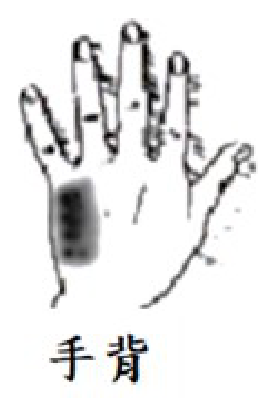

111 年第 1 次醫師醫學（一）（包括生物化學、解剖學、胚胎及發育生物學、組織學、生理學等科目知識及其臨床之應用）試題與答案
這一頁是民國 111 年第 1 次醫師醫學（一）（包括生物化學、解剖學、胚胎及發育生物學、組織學、生理學等科目知識及其臨床之應用）的整份歷屆試題，共 100 題，題目與標準答案出自考選部「國家考試試題及測驗式試題答案」開放資料，其中 100 題附有詳解。以下逐題列出題幹、選項與答案；要計時作答或記錄成績，請用線上練習。
考選部原始場次代碼：111020
線上作答這一科 →
全部 100 題
第 1 題
下列那一對腦幹神經核，其神經元發出神經纖維後先在腦幹內交叉到對側才離開腦幹？
- （A）動眼神經核（oculomotor nucleus）
- （B）滑車神經核（trochlear nucleus）
- （C）外旋神經核（abducens nucleus）
- （D）舌下神經核（hypoglossal nucleus）
答案：（B）
詳解與考點
正解：腦幹內先交叉才離開腦幹的腦神經。滑車神經核的軸突在中腦背側交叉後才出腦幹，因此每側滑車神經支配對側上斜肌，故選 B。
A：動眼神經纖維由腹側中腦離開，並不以整個神經先交叉後出腦幹為特徵。
C：外旋神經核發出的纖維由橋腦交界處離開，沒有滑車神經的背側交叉模式。
D：舌下神經核纖維由延腦前外側溝離開，主要支配同側舌肌，並非先交叉離腦幹。
本題考點：滑車神經（trochlear nerve, CN IV）是唯一由腦幹背側離出且神經纖維先交叉的腦神經；滑車神經核（trochlear nucleus）位於中腦；上斜肌（superior oblique muscle）受對側核支配。
第 2 題
小腦的苔狀傳入神經纖維（mossy fiber）主要與下列小腦皮質何者中的神經細胞產生突觸（synapses）？
- （A）分子層（molecular layer）
- （B）蒲金氏細胞層（Purkinje cell layer）
- （C）顆粒層（granule cell layer）
- （D）分子層（molecular layer）以及蒲金氏細胞層（Purkinje cell layer）
答案：（C）
詳解與考點
正解：mossy fiber 在小腦皮質的主要突觸目標。苔狀纖維進入顆粒層，在小腦小球（glomerulus）中與顆粒細胞樹突形成突觸；顆粒細胞再經平行纖維把訊號送至分子層，故選 C。
A：分子層主要有平行纖維與 Purkinje 細胞樹突；苔狀纖維不以此層為主要直接突觸位置。
B：Purkinje cell layer 的 Purkinje 細胞可受平行纖維與 climbing fiber 影響，但苔狀纖維的主要直接目標是顆粒細胞。
D：苔狀纖維的訊號確會間接抵達分子層，但題目問主要直接產生突觸的位置，故不能選此複合敘述。
本題考點：苔狀纖維（mossy fiber）在顆粒層（granule cell layer）的小腦小球突觸；顆粒細胞（granule cell）軸突形成平行纖維（parallel fiber）；攀緣纖維（climbing fiber）則直接強烈支配 Purkinje 細胞。
第 3 題
下列大腦皮質（cerebral cortex）的那一區負責控制兩眼外側注視（lateral gaze）的動作？
- （A）主要運動區（primary motor area）
- （B）主要視覺區（primary visual area）
- （C）運動輔助區（supplementary motor area）
- （D）額葉眼動區（frontal eye field）
答案：（D）
詳解與考點
正解：控制兩眼向對側共同外側注視的皮質區。額葉眼動區發出下行訊號至對側橋腦旁正中網狀結構，協調水平共同凝視，因此負責隨意的側方眼球運動，故選 D。
A：主要運動區控制隨意骨骼肌運動，但不是調控共同側方凝視的特異皮質中樞。
B：主要視覺區負責視覺訊息初步處理；能看見目標不等於發動眼球轉向。
C：運動輔助區參與動作規劃與序列控制，並非側方凝視的主要皮質區。
本題考點：額葉眼動區（frontal eye field）控制隨意共同凝視（conjugate gaze）；橋腦旁正中網狀結構（paramedian pontine reticular formation）參與水平注視；眼球運動需皮質與腦幹眼動網路整合。
第 4 題
下列何者受刺激時，會造成同側身體伸肌（extensor muscles）收縮，屈肌（flexor muscles）鬆弛？
- （A）外側前庭脊髓徑（lateral vestibulospinal tract）
- （B）外側網狀脊髓徑（lateral reticulospinal tract）
- （C）紅核脊髓徑（rubrospinal tract）
- （D）外側皮質脊髓徑（lateral corticospinal tract）
答案：（A）
詳解與考點
正解：同側伸肌收縮、屈肌鬆弛的姿勢性反應。外側前庭脊髓徑自外側前庭核下行至同側脊髓，促進伸肌運動神經元並抑制屈肌，有助維持直立姿勢與平衡，故選 A。
B：外側網狀脊髓徑的效應較複雜，常與降低伸肌張力相關，不能作為本題典型的伸肌促進路徑。
C：紅核脊髓徑較偏向促進上肢屈肌，與同側伸肌促進的敘述相反。
D：外側皮質脊髓徑主要調控遠端肢體精細隨意運動，非典型前庭姿勢反射的伸肌促進通路。
本題考點：外側前庭脊髓徑（lateral vestibulospinal tract）促進同側抗重力伸肌；前庭核（vestibular nuclei）整合平衡訊息；姿勢控制（postural control）依賴前庭脊髓、網狀脊髓等下行通路。
第 5 題
有關負責傳遞本體感覺（proprioception）的神經纖維，下列敘述何者最恰當？
- （A）通常為較粗的神經纖維（large diameter fiber），主要經脊髓背根內側（medial division of posterior root）進入脊髓
- （B）通常為較粗的神經纖維（large diameter fiber），主要經脊髓背根外側（lateral division of posterior root）進入脊髓
- （C）通常為較細的神經纖維（small diameter fiber），主要經脊髓背根內側（medial division of posterior root）進入脊髓
- （D）通常為較細的神經纖維（small diameter fiber），主要經脊髓背根外側（lateral division of posterior root）進入脊髓
答案：（A）
詳解與考點
正解：本體感覺傳入纖維的直徑與進入背根位置。本體感覺多由大型、有髓鞘的纖維傳遞，進入脊髓時主要經背根內側部分，之後可進入後索或相關本體感覺路徑，故選 A。
B：背根外側部分較多承接小直徑纖維所傳遞的痛覺、溫覺等訊息，與本體感覺典型路徑不符。
C：本體感覺需快速、精確傳導，通常仰賴大型纖維；只改成內側仍無法使小直徑的敘述正確。
D：小直徑纖維經外側部分進入較像痛溫覺的組合，是最容易因路徑聯想而選到的誘答，但非本體感覺。
本題考點：本體感覺（proprioception）多由大型有髓鞘纖維（large diameter fiber）傳遞；脊髓背根（posterior root）內側部分與後索系統相關；後索－內側丘系（dorsal column-medial lemniscus pathway）傳遞精細觸覺、振動覺與本體感覺。
第 6 題
下列何者不是間腦（diencephalon）之構造？
- （A）丘腦（thalamus）
- （B）松果體（pineal body）
- （C）豆狀核（lentiform nucleus）
- （D）下視丘（hypothalamus）
答案：（C）
詳解與考點
正解：間腦的組成。丘腦、下視丘與上丘腦相關的松果體皆屬間腦範圍；豆狀核由 putamen 與 globus pallidus 組成，屬大腦半球深部的基底核，而非間腦，故選 C。
A：丘腦是間腦的主要構造，負責多數感覺訊息轉運與整合，故不是答案。
B：松果體屬上丘腦（epithalamus）相關構造，為間腦的一部分，敘述不誤。
D：下視丘位於間腦，與自主神經、內分泌及恆定調節密切相關，故不是答案。
本題考點：間腦（diencephalon）包括 thalamus、hypothalamus、epithalamus；松果體（pineal body）與 epithalamus 相關；基底核（basal nuclei）中的 lentiform nucleus 不屬間腦。
第 7 題
下列有關眼神經（ophthalmic nerve）的描述，何者最不恰當？
- （A）屬於特殊感覺神經
- （B）屬於體感覺神經
- （C）接收眼眶結構之感覺訊息
- （D）接收部分顏面之感覺訊息
答案：（A）
詳解與考點
正解：ophthalmic nerve 的感覺種類。眼神經是三叉神經第一分支，傳遞一般體感覺，包括疼痛、溫度、觸覺及眼眶、前額等區域感覺；它不傳遞特殊感覺，故最不恰當的是 A。
B：眼神經屬一般體感覺神經，敘述正確，故不是答案。
C：眼眶內的角膜、結膜與其他結構感覺可經眼神經分支傳遞，敘述正確。
D：前額、上眼瞼與鼻背部分皮膚感覺屬眼神經分布，敘述正確。
本題考點：眼神經（ophthalmic nerve, V1）是三叉神經（trigeminal nerve）的第一分支；一般體感覺（general somatic sensation）不同於視覺、聽覺等特殊感覺（special sensation）；V1 分布於眼眶與上面部。
第 8 題
眼眶內側壁之鼻淚管（nasolacrimal canal）連通下列那一空間？
- （A）最上鼻道
- （B）上鼻道
- （C）中鼻道
- （D）下鼻道
答案：（D）
詳解與考點
正解：鼻淚管的開口位置。淚液自淚囊經鼻淚管向下引流，最後開口於下鼻甲下方的下鼻道，因此選 D；這也解釋流淚時常同時出現流鼻水的現象。
A：最上鼻道位於鼻腔上後方，與蝶篩隱窩等構造鄰近，非鼻淚管出口。
B：上鼻道與後篩竇開口相關，並非淚液的引流終點。
C：中鼻道是額竇、上頷竇及多數篩竇的重要開口區，容易與鼻腔引流構造混淆，但鼻淚管不開口於此。
本題考點：鼻淚管（nasolacrimal canal）將淚囊引流至下鼻道（inferior nasal meatus）；鼻腔鼻道（nasal meatus）各有不同鼻竇或管道開口；淚液引流（lacrimal drainage）與鼻腔相通。
第 9 題
鼓索神經（chorda tympani nerve）經過下列那一個顳骨構造離開中耳進入顳下窩（infratemporal fossa）？
- （A）岩鼓裂（petrotympanic fissure）
- （B）莖乳突孔（stylomastoid foramen）
- （C）乳突孔（mastoid foramen）
- （D）咽鼓室管（pharyngotympanic tube）
答案：（A）
詳解與考點
正解：鼓索神經離開中耳進入顳下窩的骨性通道。鼓索神經穿過鼓室後，經岩鼓裂離開顳骨並進入顳下窩，之後與舌神經合併，故選 A。
B：莖乳突孔是顏面神經主幹離開顱骨的出口；鼓索在顏面神經分支路徑中不是由此孔進入顳下窩。
C：乳突孔主要傳遞導靜脈與小血管，與鼓索神經的路徑無關。
D：咽鼓室管連接中耳與鼻咽，負責中耳通氣與壓力平衡，不是神經離開中耳的裂隙。
本題考點：鼓索神經（chorda tympani nerve）是顏面神經分支，攜帶舌前 2/3 味覺與副交感纖維；岩鼓裂（petrotympanic fissure）為其離開鼓室的通道；舌神經（lingual nerve）與鼓索神經會合。
第 10 題
下列何者不包覆在頸動脈鞘（carotid sheath）內？
- （A）頸總動脈（common carotid artery）
- （B）舌咽神經（glossopharyngeal nerve）
- （C）內頸動脈（internal carotid artery）
- （D）迷走神經（vagus nerve）
答案：（B）
詳解與考點
正解：頸動脈鞘的內容物。頸動脈鞘包覆頸總動脈或內頸動脈、內頸靜脈與迷走神經；舌咽神經在鞘外較上方的頸部走行，並非鞘內構造，故選 B。
A：頸總動脈在較低頸部位於頸動脈鞘內，敘述不誤。
C：頸總動脈分叉後的內頸動脈仍由頸動脈鞘包覆，故不是答案。
D：迷走神經位於頸動脈鞘內、動脈與靜脈之間後方，是鞘內容物之一。
本題考點：頸動脈鞘（carotid sheath）主要內容物為 carotid artery、internal jugular vein 與 vagus nerve；舌咽神經（glossopharyngeal nerve, CN IX）不在鞘內；頸部筋膜間隙（cervical fascial spaces）有助理解血管與神經的相對位置。
第 11 題
下列何者同時參與眼眶、鼻腔與口腔三者的形成？
- （A）篩骨（ethmoid bone）
- （B）淚骨（lacrimal bone）
- （C）顴骨（zygomatic bone）
- （D）上頷骨（maxillary bone）
答案：（D）
詳解與考點
正解：同時構成眼眶、鼻腔與口腔的骨。上頷骨參與眼眶底、鼻腔外側壁與底部，並形成上顎的大部分及口腔頂，因此三者皆參與，故選 D。
A：篩骨參與鼻腔與眼眶內側壁，但不構成口腔，故不符三處皆參與。
B：淚骨只在眼眶內側壁與鼻淚管區域占很小部分，不形成口腔。
C：顴骨構成顏面外側與眼眶外側壁、底部，但不參與鼻腔與口腔形成。
本題考點：上頷骨（maxillary bone）形成上顎（hard palate）的主要部分；眼眶（orbit）由多塊顱顏骨共同構成；鼻腔（nasal cavity）外側壁與底部可見上頷骨參與。
第 12 題
口腔底部近會厭軟骨（epiglottis）的黏膜，其神經支配為：
- （A）舌神經（lingual nerve）
- （B）舌咽神經（glossopharyngeal nerve）
- （C）鼓索神經（chorda tympani nerve）
- （D）內喉神經（internal laryngeal nerve）
答案：（D）
詳解與考點
正解：靠近會厭的口腔底部黏膜感覺支配。此區接近舌根與喉入口，感覺由迷走神經的內喉神經支配；其刺激可參與喉部保護反射，故選 D。
A：舌神經主要傳遞舌前 2/3 的一般感覺，不負責近會厭的黏膜。
B：舌咽神經負責舌後 1/3 與咽部部分感覺，位置相近而容易混淆；但靠近會厭、喉入口的黏膜以內喉神經為主。
C：鼓索神經隨舌神經傳遞舌前 2/3 味覺及副交感纖維，不支配該處黏膜感覺。
本題考點：內喉神經（internal laryngeal nerve）為迷走神經（vagus nerve）上喉神經分支，支配喉入口與會厭附近黏膜感覺；舌咽神經（glossopharyngeal nerve）主要支配舌後 1/3；喉保護反射（laryngeal protective reflex）仰賴此區感覺輸入。
第 13 題
蝶骨棘（spine of sphenoid bone）的位置最靠近下列何孔洞？
- （A）盲孔（foramen cecum）
- （B）腭大孔（greater palatine foramen）
- （C）棘孔（foramen spinosum）
- （D）莖乳突孔（stylomastoid foramen）
答案：（C）
詳解與考點
正解：蝶骨棘的位置；蝶骨棘位於蝶骨大翼後外側、顱底中窩附近，而棘孔正位在蝶骨棘的根部附近，故最靠近的是（C）棘孔，選 C。棘孔也是中腦膜動脈進入顱腔的重要通道。
A：盲孔位於前顱窩、額骨與篩骨交界，和位於中顱窩後外側的蝶骨棘相距甚遠。
B：腭大孔在硬顎後外側的口腔面，位置明顯較下方且偏前，並不鄰近蝶骨棘。
D：莖乳突孔位於顳骨乳突部與莖突根部之間；它也在顱底，但位於蝶骨棘的後外側，非最接近者。
本題考點：蝶骨（sphenoid bone）與顱底孔洞的定位；棘孔（foramen spinosum）位於蝶骨大翼，鄰近蝶骨棘並傳遞中腦膜血管。
第 14 題
下列何區的一般感覺，是第五對腦神經第三分支（CN V3）負責？
- （A）硬顎
- （B）鼻腔內
- （C）下眼瞼
- （D）口腔內頰
答案：（D）
詳解與考點
正解：一般感覺的 CN V3 支配範圍。口腔內頰的黏膜一般感覺主要由下頜神經的頰神經（buccal nerve）傳遞；頰神經雖名為頰，卻是感覺支，故選 D。
A：硬顎的感覺主要經上頜神經（CN V2）的腭神經傳遞，不屬 CN V3。
B：鼻腔內的感覺主要由眼神經（CN V1）與上頜神經（CN V2）的分支支配，非下頜神經。
C：下眼瞼的皮膚感覺主要由眶下神經（infraorbital nerve，CN V2）傳遞。它位在臉部下方看似接近下頜區，但神經分區仍屬 V2。
本題考點：三叉神經（trigeminal nerve）感覺分區；下頜神經（mandibular nerve, CN V3）的頰神經負責頰黏膜一般感覺。
第 15 題
心臟缺血（cardiac ischemia）產生的痛覺主要經由下列何者傳遞入中樞神經系統？
- （A）膈神經（phrenic nerve）
- （B）迷走神經（vagus nerve）
- （C）交感神經系統（sympathetic system）
- （D）左側喉返神經（left recurrent laryngeal nerve）
答案：（C）
詳解與考點
正解：心臟缺血造成的內臟痛覺傳入路徑。心臟的痛覺傳入纖維多伴隨交感神經纖維，經胸段脊神經節進入脊髓，因此常造成胸部及左上肢的牽涉痛，故選 C。
A：膈神經主要支配橫膈運動，並傳遞心包、縱膈胸膜與中央橫膈胸膜的感覺；它可參與心包刺激的肩痛，並非心肌缺血痛的主要傳入路徑。
B：迷走神經含有心臟的副交感神經與反射性傳入纖維，但心肌缺血的痛覺主要不隨迷走神經傳入。
D：左側喉返神經是迷走神經分支，主要支配喉部肌肉與感覺，和心臟缺血痛覺傳入無關。
本題考點：心臟內臟痛（cardiac visceral pain）；交感神經傳入（sympathetic afferents）與牽涉痛（referred pain）的機轉。
第 16 題
有關胸部交感神經節（thoracic sympathetic ganglion）的敘述，下列何者最為恰當？
- （A）通常會發出神經，並且只支配胸腹腔臟器
- （B）僅以灰交通支（gray rami communicantes）與胸部脊神經（thoracic spinal nerve）相連
- （C）上五個交感神經節，會發出節後神經纖維（postganglionic sympathetic fibers），支配胸腔內器官
- （D）下七個交感神經節，會發出節後神經纖維（postganglionic sympathetic fibers），支配腹腔內器官
答案：（C）
詳解與考點
正解：胸部交感神經節對胸腔器官的節後支配。上五個胸交感神經節可經心肺內臟神經發出節後交感纖維，分布至心臟、肺與相關血管，故（C）最恰當。
A：胸交感神經節除供應胸腹腔臟器外，也經灰交通支分布到體壁的血管、汗腺與豎毛肌；「只支配」胸腹腔臟器過度限縮。
B：胸交感幹與胸脊神經同時藉白交通支及灰交通支相連；白交通支輸入節前纖維，不能只說灰交通支。
D：下胸交感神經節的節前纖維多形成胸內臟神經，通過交感幹而在腹部椎前神經節突觸；不能概括為下七節直接發出節後纖維支配腹腔器官。
本題考點：胸部交感幹（thoracic sympathetic trunk）；白、灰交通支（white and gray rami communicantes）與心肺內臟神經（cardiopulmonary splanchnic nerves）。
第 17 題
臨床上左側優勢冠狀動脈（left dominant coronary artery）指的是下列何者？
- （A）前室間支動脈血液來自於左冠狀動脈
- （B）前室間支動脈血液來自於右冠狀動脈
- （C）後室間支動脈血液來自於左冠狀動脈
- （D）後室間支動脈血液來自於右冠狀動脈
答案：（C）
詳解與考點
正解：冠狀動脈「優勢」的定義。冠狀動脈優勢是依後室間支（posterior interventricular branch）起源判定，而非依前室間支；後室間支由左冠狀動脈發出即為左側優勢，故選 C。
A：前室間支通常本來就是左冠狀動脈的分支，不能用此判斷左側優勢。這個敘述看似符合左冠狀動脈解剖，但不是優勢型態的定義。
B：前室間支並非右冠狀動脈的典型分支，且仍非判定優勢所用血管。
D：後室間支由右冠狀動脈供血代表右側優勢，和題目所問左側優勢相反。
本題考點：冠狀動脈優勢（coronary dominance）；後室間支（posterior interventricular branch）起源於左冠狀動脈為左側優勢，起源於右冠狀動脈為右側優勢。
第 18 題
咳血最常發生於：
- （A）肺動脈系統
- （B）肺靜脈系統
- （C）支氣管動脈系統
- （D）支氣管靜脈系統
答案：（C）
詳解與考點
正解：咳血的主要出血來源。支氣管動脈屬體循環，灌流壓較高，且支氣管擴張、慢性發炎或腫瘤常侵蝕此系統；臨床上大多數大量咳血源於支氣管動脈系統，故選 C。
A：肺動脈屬低壓系統，雖可在肺栓塞、血管炎或動靜脈畸形等情況出血，並非咳血最常見來源。
B：肺靜脈回流至左心房，通常不是呼吸道出血的主要血管來源。
D：支氣管靜脈負責部分支氣管靜脈回流，血壓低且口徑小，較不會造成最常見的咳血。
本題考點：咳血（hemoptysis）的血管來源；支氣管動脈循環（bronchial arterial circulation）屬高壓體循環，是重要出血來源。
第 19 題
下列何者經由橫膈（diaphragm）的主動脈裂口（aortic hiatus），穿通胸腔與腹腔？
- （A）胸管（thoracic duct）
- （B）食道（esophagus）
- （C）內胸動脈（internal thoracic artery）
- （D）下膈靜脈（inferior phrenic vein）
答案：（A）
詳解與考點
正解：橫膈主動脈裂口的通過構造。主動脈裂口位於橫膈後方、介於兩側膈腳之間，除降主動脈外，胸管也隨之通過進入腹腔，故選 A。
B：食道通過的是食道裂口（esophageal hiatus），並伴隨迷走神經幹，而不是主動脈裂口。
C：內胸動脈沿胸壁內面向下，末端穿過胸廓下口附近進入腹壁，並非穿行主動脈裂口。
D：下膈靜脈的回流路徑與橫膈有關，但不屬主動脈裂口的典型通過內容物。
本題考點：橫膈裂口（diaphragmatic apertures）；主動脈裂口（aortic hiatus）傳遞降主動脈與胸管（thoracic duct）。
第 20 題
左性腺靜脈（left gonadal vein）會直接匯入下列那一個靜脈？
- （A）下腔靜脈（inferior vena cava）
- （B）左腎靜脈（left renal vein）
- （C）左總髂靜脈（left common iliac vein）
- （D）下腸繫膜靜脈（inferior mesenteric vein）
答案：（B）
詳解與考點
正解：左右性腺靜脈回流的不對稱性。左性腺靜脈向上匯入左腎靜脈，之後才流入下腔靜脈；右性腺靜脈則通常直接進入下腔靜脈，故選 B。
A：直接匯入下腔靜脈是右性腺靜脈的典型路徑，不能套用到左側。
C：左總髂靜脈主要收集骨盆與下肢靜脈回流，不是左性腺靜脈的直接匯入處。
D：下腸繫膜靜脈屬門靜脈系統，收集後腸消化道回流，和性腺靜脈的體循環回流不同。
本題考點：性腺靜脈（gonadal veins）回流；左腎靜脈（left renal vein）接受左性腺靜脈，為左右不對稱的常考解剖。
第 21 題
下列何者不在精索（spermatic cord）內？
- （A）髂腹股溝神經（ilioinguinal nerve）
- （B）生殖股神經-生殖支（genital branch of genitofemoral nerve）
- （C）輸精管（ductus deferens）
- （D）蔓狀靜脈叢（pampiniform venous plexus）
答案：（A）
詳解與考點
正解：精索的內容物。精索包含輸精管、睪丸血管、蔓狀靜脈叢及生殖股神經的生殖支等；髂腹股溝神經雖穿過腹股溝管並可到達陰囊，卻位於精索之外，故選 A。
B：生殖股神經的生殖支位於精索內，並支配提睪肌與陰囊部分感覺，是精索內容物。
C：輸精管是精索最重要的管狀內容物之一，將精子自副睪運往射精管。
D：蔓狀靜脈叢包繞睪丸動脈，參與睪丸溫度調節，位於精索內。（A）髂腹股溝神經同樣經腹股溝管，容易與（D）蔓狀靜脈叢等精索內容物混淆，但不在精索內。
本題考點：精索（spermatic cord）內容物；髂腹股溝神經（ilioinguinal nerve）穿過腹股溝管但不在精索內。
第 22 題
下列何者與網膜孔（omental foramen）的關係位置不正確？
- （A）總膽管在其後方
- （B）肝門靜脈在其前方
- （C）肝臟在其上方
- （D）十二指腸在其下方
答案：（A）
詳解與考點
正解：網膜孔四周界的相對位置，題目問不正確者。網膜孔前方是肝十二指腸韌帶，總膽管位於其中且在門靜脈前方，因此總膽管不是在網膜孔後方；（A）錯誤，故選 A。
B：肝門靜脈位於肝十二指腸韌帶內，構成網膜孔前界的一部分，故在其前方的敘述正確。
C：網膜孔上界為肝臟的尾狀葉，故肝臟位於其上方的敘述正確。
D：網膜孔下界由十二指腸第一部構成，故十二指腸在其下方的敘述正確。
本題考點：網膜孔（omental foramen）邊界；其前界為肝十二指腸韌帶（hepatoduodenal ligament），後界為下腔靜脈。
第 23 題
關於直腸（rectum），下列敘述何者正確？
- （A）直腸的黏膜非常平滑，沒有任何皺褶
- （B）提肛肌（levator ani）及肛尾韌帶（anococcygeal ligament）協助維持直腸與鄰近構造間的關係
- （C）腹膜（peritoneum）只覆蓋到乙狀結腸（sigmoid colon），並未覆蓋到直腸
- （D）肛管直腸彎曲（anorectal flexure）大略成80°，這主要是由U字型的尾骨肌（coccygeus）所造成
答案：（B）
詳解與考點
正解：直腸的固定與彎曲構造。提肛肌及肛尾韌帶協助支持骨盆底與直腸，維持直腸和鄰近構造的位置關係，故（B）正確。
A：直腸黏膜並非完全平滑，內面可見橫向直腸皺襞（transverse rectal folds），有助於支持糞便。
C：腹膜會覆蓋直腸的上段，男性與女性的覆蓋範圍不同，不能說只到乙狀結腸而未覆蓋直腸。
D：肛管直腸彎曲主要由恥骨直腸肌（puborectalis）形成的肌肉吊帶所維持，而非由尾骨肌造成。
本題考點：直腸（rectum）的支持構造；恥骨直腸肌（puborectalis）維持肛管直腸彎曲，提肛肌（levator ani）支持骨盆底。
第 24 題
下列何肌肉覆蓋住陰莖腳（crus of penis）？
- （A）坐骨海綿體肌（ischiocavernosus muscle）
- （B）球海綿體肌（bulbospongiosus muscle）
- （C）會陰淺橫肌（superficial transverse perineal muscle）
- （D）會陰深橫肌（deep transverse perineal muscle）
答案：（A）
詳解與考點
正解：男性淺會陰隙肌肉與勃起組織根部的對應。陰莖腳是陰莖海綿體的近端附著部，覆蓋其表面的肌肉是坐骨海綿體肌，收縮時可壓迫陰莖腳以協助維持勃起，故選 A。
B：球海綿體肌覆蓋陰莖球及尿道海綿體近端，不覆蓋陰莖腳。
C：會陰淺橫肌由坐骨結節走向會陰中央腱，主要支持會陰體，和陰莖腳的覆蓋關係不符。
D：會陰深橫肌位於深會陰隙，支撐骨盆底並非直接覆蓋陰莖腳。
本題考點：陰莖根部（root of penis）；坐骨海綿體肌（ischiocavernosus muscle）覆蓋陰莖腳（crus of penis），球海綿體肌覆蓋陰莖球。
第 25 題
下列何神經傳遞陰道（vagina）上部及子宮頸（cervix of uterus）的痛覺傳導纖維？
- （A）陰部神經（pudendal nerves）
- （B）下腹神經（hypogastric nerves）
- （C）骨盆內臟神經（pelvic splanchnic nerves）
- （D）腰內臟神經（lumbar splanchnic nerves）
答案：（C）
詳解與考點
正解：子宮頸與陰道上部的內臟痛覺傳入。這些構造位於骨盆痛覺線以下，痛覺傳入纖維主要隨副交感的骨盆內臟神經回到 S2–S4 脊髓節段，因此選 C。
A：陰部神經支配會陰、外陰部及陰道下部的軀體感覺；子宮頸與陰道上部屬內臟感覺，並非其主要痛覺路徑。
B：下腹神經攜帶交感神經纖維；它與骨盆痛覺線以上器官的內臟痛覺傳入較相關，不是本題部位的主要路徑。
D：腰內臟神經是交感神經節前纖維通往腹主動脈周圍神經叢的路徑，並不傳遞子宮頸及陰道上部的主要痛覺。
本題考點：骨盆內臟痛（pelvic visceral pain）；骨盆內臟神經（pelvic splanchnic nerves）承載骨盆痛覺線以下構造的痛覺傳入。
第 26 題
下列何者不是女性會陰深隙（deep perineal pouch）的內容物？
- （A）前庭球（bulb of vestibule）
- （B）部分陰道（vagina）
- （C）部分尿道（urethra）
- （D）外尿道括約肌（external urethral sphincter muscle）
答案：（A）
詳解與考點
正解：女性深會陰隙的內容物。前庭球位於陰道口兩側、會陰膜下方的淺會陰隙，而不在深會陰隙內，故選 A。
B：女性深會陰隙含有部分陰道，其穿過會陰膜的區段位於此間隙。
C：部分尿道穿過深會陰隙，並受到外尿道括約肌複合體包繞。
D：外尿道括約肌位於深會陰隙，是維持尿失禁控制的重要骨骼肌。（A）前庭球與（C）部分尿道都靠近陰道口容易混淆，但兩者分屬淺、深會陰隙。
本題考點：女性會陰隙（perineal pouches）；前庭球（bulb of vestibule）位於淺會陰隙，深會陰隙含尿道、陰道部分與外尿道括約肌。
第 27 題
下列那一條肌肉協助三角肌（deltoid muscle）外展（abduct）上臂？
- （A）棘上肌（supraspinatus）
- （B）棘下肌（infraspinatus）
- （C）大圓肌（teres major）
- （D）小圓肌（teres minor）
答案：（A）
詳解與考點
正解：協助三角肌啟動上臂外展的肌肉。棘上肌跨越肩關節上方並固定肱骨頭，尤其負責外展起始，之後三角肌成為主要外展肌，故選 A。
B：棘下肌主要使上臂外旋，並協助穩定肩關節，不是主要外展協同肌。
C：大圓肌主要使上臂內收、內旋與伸展，作用方向和外展相反。
D：小圓肌主要使上臂外旋並穩定肩關節；（D）小圓肌和（A）棘上肌同為旋轉肌袖成員，卻不負責外展起始。
本題考點：肩關節外展（shoulder abduction）；棘上肌（supraspinatus）啟動外展，三角肌（deltoid）負責後續主要外展。
第 28 題
下列何者與大腿闊筋膜（fascia lata）的附著點無關？
- （A）腹股溝韌帶（inguinal ligament）
- （B）薦棘韌帶（sacrospinous ligament）
- （C）髂嵴（iliac crest）
- （D）坐骨粗隆（ischial tuberosity）
答案：（B）
詳解與考點
正解：大腿闊筋膜在骨盆與大腿的附著範圍。大腿闊筋膜附著於腹股溝韌帶、髂嵴與坐骨粗隆等骨盆周邊構造；薦棘韌帶位於骨盆腔後側，並非其附著點，故選 B。
A：大腿闊筋膜上端在腹股溝處附著於腹股溝韌帶，是其前上方的重要附著關係。
C：大腿闊筋膜沿髂嵴附著，並向下包覆大腿肌群。
D：大腿闊筋膜在後上方與坐骨粗隆附近有附著關係，屬其骨盆側附著範圍。
本題考點：大腿闊筋膜（fascia lata）附著；薦棘韌帶（sacrospinous ligament）是骨盆韌帶，不屬大腿闊筋膜附著點。
第 29 題
下列那一條神經，支配圖中黑色區域的表皮感覺？

- （A）尺神經（ulnar nerve）
- （B）橈神經（radial nerve）
- （C）正中神經（median nerve）
- （D）肌皮神經（musculocutaneous nerve）
答案：（A）
詳解與考點
正解：圖示為手背，黑色區域位於小指側的手背尺側，屬尺神經背側皮支（dorsal cutaneous branch of ulnar nerve）支配的表皮感覺範圍。尺神經亦支配手背內側及小指、無名指尺側部分的背側感覺，故選 A。
B：橈神經（radial nerve）的淺支主要支配手背橈側，以及拇指、食指、中指與無名指橈側部分的近端背側皮膚；其範圍偏向拇指側，並非圖示的小指側手背。
C：正中神經（median nerve）主要支配手掌橈側與拇指、食指、中指及無名指橈側半的掌側感覺；手背感覺僅及這些手指的遠端指節背側，並不支配圖示的尺側手背。
D：肌皮神經（musculocutaneous nerve）在前臂成為外側前臂皮神經（lateral cutaneous nerve of forearm），支配前臂橈側皮膚，不支配手背。
本題考點：手背皮膚感覺分布（cutaneous innervation of dorsum of hand）——尺神經支配手背尺側及小指側區域；橈神經淺支支配手背橈側；正中神經主要支配橈側手指掌面與遠端指背。
第 30 題
下列腋淋巴結（axillary lymph nodes）中，何者主要直接收集乳房的淋巴回流，尤其是乳房的外上側？
- （A）中央淋巴結（central nodes）
- （B）前淋巴結（anterior nodes; pectoral nodes）
- （C）外淋巴結（lateral nodes; humeral nodes）
- （D）後淋巴結（posterior nodes; subscapular nodes）
答案：（B）
詳解與考點
正解：乳房、尤其外上象限的淋巴引流。乳房大部分淋巴先流向腋淋巴結的前淋巴結，又稱胸肌淋巴結，外上側乳房尤以此路徑重要，故選 B。
A：中央淋巴結位於腋窩中央，主要接收前、後、外等群淋巴結的匯集淋巴，並非乳房最主要的直接初站。
C：外淋巴結主要接收上肢淋巴回流，非乳房外上側的主要直接引流站。
D：後淋巴結主要接收背部與肩胛區淋巴，並不以乳房引流為主。
本題考點：乳房淋巴引流（lymphatic drainage of breast）；前淋巴結／胸肌淋巴結（anterior or pectoral nodes）是乳房重要的腋窩引流群。
第 31 題
病人位於膕窩處的膕靜脈（popliteal vein）發生血栓，下列何者的血流量最不可能減少?
- （A）大隱靜脈（great saphenous vein）
- （B）小隱靜脈（small saphenous vein）
- （C）脛後靜脈（posterior tibial vein）
- （D）股靜脈（femoral vein）
答案：（A）
詳解與考點
正解：膕靜脈血栓對其上、下游靜脈回流的影響。小隱靜脈與脛後靜脈皆匯向膕靜脈，股靜脈位於其近端，因此相關血流可受阻；大隱靜脈則直接匯入股靜脈，未經膕靜脈，故最不可能減少的是 A。
B：小隱靜脈通常匯入膕靜脈，膕靜脈血栓會直接阻礙其回流。
C：脛後靜脈匯入膕靜脈，是膕靜脈的遠端匯入支，血流量可能減少。
D：股靜脈承接膕靜脈後的回流；膕靜脈阻塞會減少經此深靜脈路徑抵達股靜脈的血流。
本題考點：下肢靜脈回流（venous drainage of lower limb）；大隱靜脈（great saphenous vein）直接匯入股靜脈，與膕靜脈系統不同。
第 32 題
下列何者由軸旁中胚層（paraxial mesoderm）衍生而來？
- （A）脊索（notochord）
- （B）體節（somite）
- （C）體腔（coelom）
- （D）原條（primitive streak）
答案：（B）
詳解與考點
正解：胚胎中胚層的分區衍生物。軸旁中胚層位於神經管兩側，會分節形成體節，體節再分化為硬節、肌節與皮節等構造，故選 B。
A：脊索來自原腸形成時的軸性中胚層，屬中線誘導構造，不是軸旁中胚層形成的體節衍生物。
C：體腔由側板中胚層內的空隙融合形成，和軸旁中胚層不同。
D：原條形成於上胚層，是原腸形成的結構，不是中胚層分區後的衍生物。
本題考點：軸旁中胚層（paraxial mesoderm）；體節（somite）及其衍生的硬節（sclerotome）、肌節（myotome）與皮節（dermatome）。
第 33 題
下列關於氣管（trachea）發育之敘述，何項錯誤？
- （A）其內襯上皮源於前腸（foregut）之內胚層（endoderm）
- （B）其軟骨源於臟層間葉組織（splanchnic mesenchyme）
- （C）其腺體源自於前腸（foregut）之中胚層（mesoderm）
- （D）其肌肉源於臟層間葉組織（splanchnic mesenchyme）
答案：（C）
詳解與考點
正解：氣管腺體的胚層來源。呼吸道上皮及其腺體均由前腸腹側突出的內胚層分化；臟層間葉則形成周圍的軟骨、平滑肌與結締組織。因此（C）把腺體誤列為中胚層來源，為錯誤敘述，故選 C。
A：氣管內襯上皮由前腸內胚層形成，敘述正確，故不是本題答案。
B：氣管軟骨屬呼吸道周圍支持組織，源自臟層間葉，敘述正確。
D：氣管平滑肌亦由臟層間葉分化，敘述正確。
本題考點：呼吸系統發育（respiratory system development）——前腸內胚層形成呼吸道上皮與腺體；臟層間葉（splanchnic mesenchyme）形成軟骨、肌肉及結締組織。
第 34 題
在男性生殖系統，下列何者構造衍生自胚胎時期之中腎管（mesonephric duct）？
- （A）細精管（seminiferous tubule）
- （B）睪丸網（rete testis）
- （C）射精管（ejaculatory duct）
- （D）睪丸附件（appendix of testis）
答案：（C）
詳解與考點
正解：男性內生殖器的中腎管（mesonephric duct）衍生物。中腎管延續為附睪管、輸精管、射精管與精囊；因此射精管源自中腎管，故選 C。
A：細精管由性腺嵴內的性索形成，不是中腎管衍生物。
B：睪丸網由睪丸縱隔內的性索形成；它與中腎小管連接，但本身並非中腎管衍生。
D：睪丸附件是苗勒管（paramesonephric duct）的遺跡，不是中腎管衍生物。
本題考點：男性生殖道發育（male genital tract development）——中腎管形成附睪管、輸精管、射精管及精囊；中腎小管則參與形成輸出小管。
第 35 題
動脈導管（ductus arteriosus）源自下列何構造？
- （A）左側第六動脈弓（aortic arch）
- （B）左側第五動脈弓（aortic arch）
- （C）右側第五動脈弓（aortic arch）
- （D）左側第四動脈弓（aortic arch）
答案：（A）
詳解與考點
正解：動脈導管是胎兒期連接肺動脈幹與降主動脈的血管，其胚胎來源為左側第六動脈弓的遠端部分，故選 A。
B：第五動脈弓在人類通常不形成明確的成人血管構造，不能形成動脈導管。
C：右側第五動脈弓同樣不是動脈導管的來源。
D：左側第四動脈弓主要形成主動脈弓的一部分；它看似同在左側主動脈系統，卻不是動脈導管來源。
本題考點：主動脈弓衍生物（aortic arch derivatives）——左側第六弓遠端形成動脈導管（ductus arteriosus），左側第四弓則參與主動脈弓。
第 36 題
下列有關四肢（limbs）發育的敘述，何者錯誤？
- （A）肢芽（limb buds）於胚胎第四週末時，開始出現於體壁腹外側
- （B）頂外胚層嵴（apical ectodermal ridge）誘導肢芽（limb buds）的生長及發育
- （C）下肢芽（lower limb buds）較上肢芽（upper limb buds）晚一或二天發育
- （D）發育中的上肢和下肢均以其縱軸朝外側旋轉90度
答案：（D）
詳解與考點
正解：上下肢旋轉方向不同。發育中的上肢沿縱軸向外側旋轉約90度，下肢則向內側旋轉約90度；因此（D）稱兩者都向外側旋轉，為錯誤敘述，故選 D。
A：肢芽在第4週末由體壁腹外側出現，敘述正確。
B：頂外胚層嵴可維持下方間葉細胞增生並促進肢芽近遠端生長，敘述正確。
C：下肢芽出現與發育較上肢芽晚約1至2天，敘述正確。
本題考點：肢體發育（limb development）——頂外胚層嵴（apical ectodermal ridge）調控肢芽生長；上肢外旋、下肢內旋，是成人肢體方向的基礎。
第 37 題
下列何者的內部細胞骨架是以微管（microtubule）為基礎？
- （A）紋狀緣的微絨毛（microvilli of the striated border）
- （B）刷狀緣的微絨毛（microvilli of the brush border）
- （C）靜纖毛（stereocilia）
- （D）纖毛（cilia）
答案：（D）
詳解與考點
正解：細胞骨架的主成分。纖毛的軸絲（axoneme）具有典型微管排列，是以微管為基礎的運動構造，故選 D。
A：紋狀緣微絨毛的核心為肌動蛋白絲（actin filaments），不是微管。
B：刷狀緣微絨毛同樣以肌動蛋白絲束支持；名稱與（D）纖毛相近，卻不能據此判為微管構造。
C：靜纖毛是延長且通常不動的微絨毛，本質上也以肌動蛋白絲為主。
本題考點：細胞骨架（cytoskeleton）——纖毛（cilia）以微管軸絲構成；微絨毛（microvilli）與靜纖毛（stereocilia）以肌動蛋白絲為骨架。
第 38 題
分泌物質自腺體細胞釋出至細胞外之後，分泌物質仍有細胞膜（plasma membrane）包覆的是屬於：
- （A）全泌腺（holocrine gland）
- （B）局泌腺（merocrine gland）
- （C）頂泌腺（apocrine gland）
- （D）內分泌腺（endocrine gland）
答案：（C）
詳解與考點
正解：釋出後分泌物仍被細胞膜包覆。頂泌腺以細胞頂端胞質連同其質膜一起出芽釋放，故細胞外的分泌物帶有膜包覆，故選 C。
A：全泌腺由整個細胞崩解成為分泌物，並非以完整膜包覆的出芽分泌。
B：局泌腺以胞吐作用（exocytosis）釋放分泌物，囊泡膜會與細胞膜融合，分泌物本身不再被膜包住。
D：內分泌腺是將產物釋入血液或組織液的腺體分類，不能用來表示頂端胞質連膜脫落的機制。
本題考點：外分泌腺分泌方式（exocrine secretion）——局泌（merocrine）為胞吐；頂泌（apocrine）帶走頂端胞質及細胞膜；全泌（holocrine）由細胞整體解體。
第 39 題
下列對骨母細胞（osteoblast）、骨細胞（osteocyte）與蝕骨細胞（osteoclast）的敘述，何者正確？
- （A）皆由骨生成細胞（osteoprogenitor cell）分化而來
- （B）骨細胞的壽命最長，蝕骨細胞的壽命最短
- （C）骨母細胞的數量最多，蝕骨細胞的數量最少
- （D）皆為單核細胞
答案：（B）
詳解與考點
正解：三種骨細胞的來源與壽命比較。骨細胞埋於骨基質中，壽命可很長；蝕骨細胞為短命的骨吸收細胞。因此（B）正確，故選 B。
A：骨母細胞與骨細胞由骨生成細胞分化，但蝕骨細胞源自單核球／巨噬細胞譜系，三者並非同一來源。
C：成熟骨中以骨細胞數量最多，骨母細胞並非最多；蝕骨細胞雖通常最少，但（C）前半句已錯，不能成立。
D：骨母細胞與骨細胞為單核，但蝕骨細胞由多個前驅細胞融合而成，為多核細胞。
本題考點：骨細胞生物學（bone cell biology）——骨母細胞（osteoblast）形成骨、骨細胞（osteocyte）維持骨基質、蝕骨細胞（osteoclast）為多核且負責骨吸收。
第 40 題
下列有關中樞神經系統內無髓鞘神經元（unmyelinated neuron）的敘述，何者正確？
- （A）包埋於神經膠細胞的突起（glial cell process）
- （B）其無髓鞘軸突（unmyelinated axon）周圍有支持細胞（supporting cell）
- （C）其無髓鞘軸突（unmyelinated axon）具有基底層（basal lamina）
- （D）其無髓鞘軸突（unmyelinated axon）外沒有結締組織（connective tissue）
答案：（D）
詳解與考點
正解：題幹限定在中樞神經系統。中樞內無髓鞘軸突由少突膠細胞等膠細胞環境支持，但不像周邊神經那樣有神經內膜等結締組織包覆；因此（D）正確，故選 D。
A：包埋在膠細胞突起中是周邊神經系統無髓鞘軸突與許旺細胞的典型描述，不適用於中樞。
B：無髓鞘軸突周圍有明確支持細胞包裹，亦較符合周邊許旺細胞的關係。
C：中樞的膠細胞不形成如許旺細胞般包住無髓鞘軸突的基底層，故不正確。
本題考點：中樞與周邊無髓鞘神經纖維（unmyelinated nerve fibers）——周邊纖維受許旺細胞與基底層包圍；中樞纖維缺乏周邊神經的結締組織鞘。
第 41 題
下列有關下腔靜脈（inferior vena cava）管壁組成的敘述，何者正確？
- （A）有顯著波浪狀的彈性內膜（internal elastic membrane）和彈性外膜（external elastic membrane）
- （B）平滑肌細胞（smooth muscle cells）只分布在中膜（tunica media）
- （C）外膜（tunica adventitia）比中膜（tunica media）厚，外膜有許多縱走平滑肌（smooth muscle cells）成束排列
- （D）分布在中膜（tunica media）與外膜（tunica adventitia）的平滑肌細胞（smooth muscle cells）的排列方向相同
答案：（C）
詳解與考點
正解：下腔靜脈作為大型靜脈的管壁特徵。大型靜脈的外膜通常厚於中膜，且外膜有成束縱走平滑肌，協助血液回流，故選 C。
A：明顯的內、外彈性膜是肌性動脈較典型的特徵，非下腔靜脈。
B：下腔靜脈的平滑肌不只位於中膜，外膜也有縱走平滑肌，故錯。
D：中膜平滑肌以環形或橫向排列為主，外膜的大束平滑肌則縱走，方向並不相同。
本題考點：大型靜脈組織學（large vein histology）——外膜（tunica adventitia）較發達並含縱走平滑肌；中膜（tunica media）相對較薄。
第 42 題
下列何者是膽汁（bile）運送之管道？
- （A）赫林氏管（canal of Hering）
- （B）狄氏腔（space of Disse）
- （C）肝竇（hepatic sinusoid）
- （D）乳糜管（lacteal）
答案：（A）
詳解與考點
正解：肝內膽汁流出的管道。赫林氏管位於膽小管與小葉間膽管之間，是膽汁自肝細胞分泌後通往膽管系統的過渡通道，故選 A。
B：狄氏腔位於肝細胞與肝竇內皮間，供血漿與肝細胞交換，非膽汁通道。
C：肝竇運送的是血液，血流方向亦與膽汁流向相反。
D：乳糜管位於小腸絨毛，用來吸收脂質，不參與膽汁運送。
本題考點：肝臟微循環與膽汁流（hepatic microcirculation and bile flow）——膽汁依膽小管、赫林氏管（canal of Hering）至膽管流動，與肝竇血流方向相反。
第 43 題
下列何種細胞具有外分泌（exocrine）以及類似內分泌（endocrine-like）的功能？
- （A）肝細胞（hepatocytes）
- （B）胰島細胞（pancreatic islet cells）
- （C）唾液腺腺泡細胞（salivary acinar cells）
- （D）庫弗氏細胞（Kupffer cells）
答案：（A）
詳解與考點
正解：同時有外分泌與類內分泌功能的細胞。肝細胞將膽汁排入膽小管，屬外分泌；也將多種蛋白質與代謝產物釋入血液，具有類似內分泌的功能，故選 A。
B：胰島細胞主要將激素釋入血液，屬內分泌細胞，沒有膽管式外分泌功能。
C：唾液腺腺泡細胞分泌唾液至導管，屬外分泌，但不具題目所稱的類內分泌雙重角色。
D：庫弗氏細胞是肝竇內的巨噬細胞，主要負責吞噬與免疫監視，非分泌雙功能細胞。
本題考點：肝細胞功能（hepatocyte functions）——肝細胞分泌膽汁至膽小管（exocrine function），並向血液釋出血漿蛋白等物質（endocrine-like function）。
第 44 題
在表皮層中那一種結構連接基底細胞（basal cell）與基底膜（basement membrane）？
- （A）胞橋小體（desmosome）
- （B）緊密接合（tight junction）
- （C）間隙接合（gap junction）
- （D）半胞橋小體（hemidesmosome）
答案：（D）
詳解與考點
正解：基底細胞與基底膜之間的連接。半胞橋小體將基底細胞內的中間絲錨定到基底膜，故選 D。
A：胞橋小體連接相鄰細胞彼此的中間絲，不是細胞對基底膜的連接。
B：緊密接合封閉相鄰細胞間隙、形成屏障，非基底膜錨定構造。
C：間隙接合讓相鄰細胞交換離子與小分子訊息，亦不連接基底膜。
本題考點：細胞接合（cell junctions）——半胞橋小體（hemidesmosome）連接細胞與基底膜；胞橋小體（desmosome）連接細胞與細胞。
第 45 題
關於胎盤（placenta）的絨毛（chorionic villi），下列敘述何者正確？
- （A）初級絨毛（primary chorionic villi）內具有大量的結締組織
- （B）次級絨毛（secondary chorionic villi）只會覆蓋部分的絨毛膜囊（chorionic sac）
- （C）三級絨毛（tertiary chorionic villi）可觀察到血管出現於結締組織中
- （D）次級絨毛（secondary chorionic villi）的最外層為細胞滋養層（cytotrophoblast）所構成
答案：（C）
詳解與考點
正解：絨毛由初級至三級的成熟順序。初級絨毛為滋養層柱，次級絨毛有胚外中胚層結締組織進入，三級絨毛再於該結締組織內出現血管；故（C）正確，故選 C。
A：初級絨毛尚未有大量結締組織；結締組織在次級絨毛階段才進入。
B：次級絨毛不是僅覆蓋部分絨毛膜囊的定義性特徵，敘述不正確。
D：次級絨毛最外層是合體滋養層（syncytiotrophoblast），細胞滋養層位於其內側。
本題考點：絨毛發育（chorionic villus development）——初級絨毛由滋養層構成；次級絨毛加入胚外中胚層；三級絨毛出現胎兒血管。
第 46 題
下列內分泌腺（endocrine gland）與細胞或構造之配對，何者錯誤？
- （A）腎上腺絲球帶（zona glomerulosa）：糖皮質素分泌細胞（glucocorticoid secreting cell）
- （B）腎上腺髓質（adrenal medulla）：嗜鉻細胞（chromaffin cell）
- （C）腦上腺（epiphysis cerebri）：腦砂（brain sand）
- （D）腦下腺神經部（pars nervosa of hypophysis）：赫氏小體（Herring body）
答案：（A）
詳解與考點
正解：腎上腺皮質分層與類固醇分泌。絲球帶（zona glomerulosa）分泌的是鹽皮質素，主要為 aldosterone；糖皮質素由束狀帶分泌。因此（A）配對錯誤，故選 A。
B：腎上腺髓質的主要細胞為嗜鉻細胞（chromaffin cell），敘述正確。
C：腦上腺可見腦砂（brain sand）鈣化沉積，敘述正確。
D：腦下腺神經部可見赫氏小體（Herring body），為神經分泌物累積處，敘述正確。
本題考點：腎上腺皮質分層（adrenal cortex zones）——絲球帶分泌鹽皮質素（mineralocorticoids），束狀帶分泌糖皮質素（glucocorticoids），網狀帶分泌雄性素。
第 47 題
一個原本沒有任何通透性的膜分隔左右兩邊等體積的水溶液，左邊水溶液為1M 氯化鉀，右邊水溶液為1M 氯化鈉。現在如果讓這個膜變成水與鈉離子可以自由通過的半透膜，直到擴散平衡為止。下列敘述何者正確？
- （A）左邊溶液之水分子總量減少，半透膜右側帶負電荷
- （B）左邊溶液之水分子總量減少，半透膜右側帶正電荷
- （C）左邊溶液之水分子總量增加，半透膜右側帶負電荷
- （D）左邊溶液之水分子總量增加，半透膜右側帶正電荷
答案：（C）
詳解與考點
正解：只有水與 Na+ 可通過。左側 K+ 與 Cl− 都不能通過，形成有效滲透粒子，故水淨移向左側，使左側水分子總量增加。Na+ 由右向左擴散後使左側相對正、右側留下相對負電荷；因此右側帶負電且左側水量增加，故選 C。
A：右側帶負電的方向正確，但水不會減少於左側；不可通透的左側 KCl 促使水移入左側。
B：水量方向與電荷方向都錯；右側因 Na+ 外移而相對帶負電。
D：左側水量增加正確，但右側不會帶正電，而是因 Na+ 離開而相對帶負電。
本題考點：半透膜平衡（semipermeable membrane equilibrium）——不可通透溶質決定有效滲透壓；可通透離子的擴散造成擴散電位（diffusion potential），並受電中性限制。
第 48 題
排卵後會發生的生理現象，下列何者正確？
- （A）濾泡刺激素（follicle-stimulating hormone, FSH）促進黃體（corpus luteum）分泌黃體素（progesterone）
- （B）雌性素（estrogen）抑制黃體生成素（luteinizing hormone, LH）分泌
- （C）濾泡刺激素（follicle-stimulating hormone, FSH）刺激子宮內膜增生（endometrium proliferation）
- （D）雌性素（estrogen）促進基礎體溫上升
答案：（B）
詳解與考點
正解：排卵後的黃體期。黃體分泌的 progesterone 與 estrogen 對下視丘—腦下垂體軸形成負回饋，抑制 LH 分泌；因此（B）正確，故選 B。
A：黃體素分泌主要受 LH 支持，不是由 FSH 促進黃體分泌的典型調節。
C：FSH 促進濾泡發育，濾泡分泌 estrogen 後促進子宮內膜增生，這是排卵前濾泡期較重要的機制，非本題排卵後現象。
D：排卵後基礎體溫上升的主要原因是 progesterone，而非 estrogen；此項看似都屬黃體期激素變化，但關鍵激素錯置。
本題考點：月經週期黃體期（luteal phase）——黃體分泌 progesterone 與 estrogen，對 LH/FSH 形成負回饋；progesterone 使基礎體溫上升。
第 49 題
下列何者是參與引發睪丸下降至陰囊（testis descent）的重要因子，而此與精子生成能力密切相關？
- （A）激活素（activin）
- （B）雄性素（androgen）
- （C）沃氏管退化因子（Wolffian duct regression factor）
- （D）血管內皮生長因子（vascular endothelial growth factor）
答案：（B）
詳解與考點
正解：睪丸下降與日後精子生成的關聯。雄性素參與睪丸經腹股溝管下降及陰囊相關構造的發育；睪丸能位於較低溫的陰囊，對正常精子生成重要，故選 B。
A：activin 主要參與生殖內分泌調節，並非睪丸下降的重要主導因子。
C：沃氏管退化因子不是睪丸下降的關鍵因子，且雄性胚胎的沃氏管在 androgen 作用下維持而非退化。
D：血管內皮生長因子主要調控血管新生，無法解釋睪丸下降與精子生成的關係。
本題考點：睪丸下降（testicular descent）——雄性素（androgen）與睪丸引帶等共同參與下降；陰囊較低溫環境有利精子生成（spermatogenesis）。
第 50 題
下列對於負責傳遞視覺刺激的細胞，其接受域（receptive field）的敘述，何者最不適當？
- （A）細胞接受域的形狀是由光點在完全黑暗的視野中游移測試得知，當光點刺激出現的位置可改變該細胞在黑暗（或光點游移至該位置前）時所呈現的電位活動，即定義為該細胞的接受域
- （B）相鄰的兩細胞，其接受域的形狀及大小，通常較空間分布位置相隔遙遠的兩細胞更為相似；相鄰兩細胞其接受域發生重疊的程度，通常也較空間分布位置相隔遙遠的兩細胞為高
- （C）感光細胞（包括桿細胞及椎細胞）及節細胞的接受域都是圓形，後者甚至會出現光刺激之效果相反或互相拮抗之細胞電位活動反應的同心圓分布型態。節細胞接受域圓的直徑通常都較感光細胞圓形接受域之直徑為小
- （D）不論細胞具有on-center/off-surround或off-center/on-surround的接受域，對於解析光刺激究竟出現在甚麼位置（或稱空間解像力）都有貢獻。off-surround可能是由鄰近細胞的側抑制（lateral inhibition）所造成
答案：（C）
詳解與考點
正解：感光細胞與節細胞接受域的大小關係。感光細胞的接受域大致對應其直接接收光線的小區域；節細胞接受域整合多個感光細胞輸入，通常較大，且呈中心—周邊拮抗。因此（C）稱節細胞接受域直徑通常較小，最不適當，故選 C。
A：以小光點在暗背景移動，觀察何處可改變細胞反應，是描繪接受域的基本方法，敘述適當。
B：相鄰細胞通常有較相近且較易重疊的接受域，符合視網膜空間拓撲組織。
D：on-center/off-surround 與 off-center/on-surround 均有助於定位與對比辨識；周邊拮抗可由側抑制造成，敘述適當。
本題考點：視覺接受域（visual receptive field）——視網膜節細胞（retinal ganglion cell）具有中心—周邊拮抗（center-surround antagonism），其接受域由多個感光細胞訊號整合而成。
第 51 題
下列神經元，何項最不可能是主司意識喚起（arousal）功能的ascending reticular formation system之一部分？
- （A）位於pontine reticular formation的cholinergic neuron
- （B）位於locus coeruleus的noradrenergic neuron
- （C）位於medial septal area的dopaminergic neuron
- （D）位於dorsal raphé nucleus的serotoninergic neuron
答案：（C）
詳解與考點
正解：上行網狀活化系統（ascending reticular formation system）的典型神經傳遞物與核團。橋腦網狀結構的膽鹼性神經元、藍斑核的正腎上腺素性神經元及背側縫核的血清素性神經元都參與喚醒；內側隔區雖與膽鹼性調節和海馬功能相關，卻不是典型的多巴胺性喚醒核團，故選 C。
A：橋腦網狀結構的膽鹼性神經元參與覺醒與睡眠週期調節，故可能屬此系統。
B：藍斑核的正腎上腺素性神經元是維持警覺與覺醒的重要系統，故非答案。
D：背側縫核的血清素性神經元參與睡眠—覺醒調節，故非答案。
本題考點：上行網狀活化系統（ascending reticular activating system）——膽鹼性、正腎上腺素性與血清素性腦幹投射共同調控覺醒（arousal）與注意力。
第 52 題
個案因長期酗酒而出現有突然想不起來本來計畫好要做的事情、想不起來一個名字熟識的人其臉孔的特徵、想用過去學過的詞彙來進行溝通，卻怎麼也想不起來那些詞彙要怎麼說等症狀的Korsakoff syndrome，但該個案長久以來所建立的聽覺相關記憶卻無明顯缺損。下列何項腦區和該個案之功能缺損症狀最不相關？
- （A）prefrontal cortex
- （B）parahippocampal cortex
- （C）mammillary body
- （D）planum temporale
答案：（D）
詳解與考點
正解：Korsakoff syndrome 的失憶與題幹保留的聽覺相關記憶。前額葉皮質涉及工作記憶與提取策略，海馬旁皮質及乳頭體與陳述性記憶形成、Papez circuit 有關；planum temporale 則主要是聽覺聯合皮質的一部分，且題幹指出既有聽覺相關記憶未明顯受損。因此（D）與所述缺損最不相關，故選 D。
A：prefrontal cortex 與計畫後遺忘、工作記憶及記憶提取策略有關，能對應部分症狀。
B：parahippocampal cortex 參與陳述性記憶的編碼與提取，和新近記憶障礙相關。
C：mammillary body 是 Korsakoff syndrome 常受影響的結構，與失憶關係密切。
本題考點：Korsakoff syndrome——常與 thiamine deficiency 相關，主要造成順行性失憶與記憶提取障礙；乳頭體（mammillary body）與海馬旁皮質（parahippocampal cortex）是重要記憶迴路結構。
第 53 題
下列有關鈉鉀幫浦的敘述，何者錯誤？
- （A）每運轉一次，會消耗一個ATP
- （B）每次打進三個鈉離子，打出兩個鉀離子
- （C）毛地黃抑制鈉鉀幫浦時，細胞體積可能會變大
- （D）毛地黃抑制鈉鉀幫浦時，細胞可能會去極化
答案：（B）
詳解與考點
正解：鈉鉀幫浦每一循環運送鈉、鉀離子的方向。Na⁺/K⁺-ATPase 每消耗 1 個 ATP，會將 3 個 Na⁺由細胞內運出、同時將 2 個 K⁺由細胞外運入；選項把方向顛倒，故錯誤的是 B。此幫浦的淨外移 1 個正電荷也有助維持細胞內負的膜電位。
A：鈉鉀幫浦每完成一個運輸循環，確實水解並消耗 1 個 ATP，敘述正確，故不是本題答案。
C：毛地黃抑制鈉鉀幫浦後，細胞內 Na⁺累積；水分可隨有效滲透粒子進入細胞，因此細胞體積可能變大，敘述合理。
D：毛地黃抑制鈉鉀幫浦會使細胞內 Na⁺增加、K⁺梯度逐漸減少，使靜止膜電位傾向較不負，也就是可能去極化；它看似與正性肌力作用混淆，但去極化仍是幫浦受抑後可見的離子效應。
本題考點：鈉鉀幫浦（Na⁺/K⁺-ATPase）以 1 ATP 將 3 Na⁺泵出、2 K⁺泵入；電生性運輸（electrogenic transport）有助維持靜止膜電位與細胞容積。
第 54 題
肉毒桿菌毒素（botulinum toxin）可以用來舒緩局部肌肉痙攣症，因為肉毒桿菌毒素會：
- （A）阻斷鈣離子通道
- （B）破壞SNARE蛋白
- （C）抑制乙醯膽鹼受體
- （D）抑制乙醯膽鹼酶
答案：（B）
詳解與考點
正解：肉毒桿菌毒素使局部骨骼肌鬆弛的突觸前機轉。肉毒桿菌毒素切割 SNARE 蛋白，阻止含乙醯膽鹼的囊泡與突觸前膜融合，因而抑制神經肌肉接合處乙醯膽鹼釋放，故選 B。
A：肉毒桿菌毒素不是以阻斷電壓依賴性鈣離子通道來造成鬆弛；鈣離子內流仍是囊泡釋放的訊號，但毒素阻斷的是其後的囊泡融合步驟。
C：它不直接抑制骨骼肌終板上的尼古丁型乙醯膽鹼受體；受體本身完整，但因突觸前乙醯膽鹼無法釋出而缺乏刺激。
D：抑制乙醯膽鹼酶會減少乙醯膽鹼分解、增強而非削弱神經肌肉傳遞，因此不能解釋肉毒桿菌毒素的肌肉鬆弛作用。
本題考點：肉毒桿菌毒素（botulinum toxin）切割 SNARE 蛋白；突觸前囊泡融合（synaptic vesicle fusion）受阻會減少乙醯膽鹼釋放並造成弛緩性麻痺。
第 55 題
下列有關甘胺酸（glycine）的敘述，何者正確？
- （A）是脊髓與腦幹最主要的抑制性神經傳遞物質
- （B）受體開啟時會讓鉀離子流出細胞而產生抑制作用
- （C）生物鹼番木鼈鹼（strychnine）是甘胺酸受體的拮抗劑，服用過量會抑制肌肉收縮
- （D）可以結合到尼古丁型乙醯膽鹼通道的甘胺酸結合位置，並促進乙醯膽鹼通道的開啟
答案：（A）
詳解與考點
正解：甘胺酸在中樞神經系統的抑制性作用位置。甘胺酸是脊髓與腦幹最重要的抑制性神經傳遞物質之一，其受體是配體門控 Cl⁻通道；開啟後通常使膜電位更負或產生分流抑制，故選 A。
B：甘胺酸受體的主要離子通透性是 Cl⁻，不是讓 K⁺外流；K⁺外流是許多 G 蛋白偶聯抑制性受體常見的機轉，容易與甘胺酸受體混淆。
C：strychnine 的確是甘胺酸受體拮抗劑，但阻斷抑制性傳遞會造成過度反射、肌強直與痙攣，而非抑制肌肉收縮。
D：尼古丁型乙醯膽鹼受體由 acetylcholine 活化；glycine 作用於獨立的 glycine receptor（Cl⁻通道），不能開啟尼古丁型乙醯膽鹼受體。
本題考點：甘胺酸（glycine）是脊髓、腦幹的主要抑制性傳遞物質；甘胺酸受體（glycine receptor）為 Cl⁻配體門控通道；strychnine 阻斷此受體可引起痙攣。
第 56 題
下列何者為身體在直線加速（linear acceleration）時協助維持平衡的最主要構造？
- （A）Ruffini corpuscle
- （B）organ of Corti
- （C）semicircular canals
- （D）utricle and saccule
答案：（D）
詳解與考點
正解：「直線加速」而非角加速。橢圓囊與球囊的耳石器負責偵測重力與直線加速度；其耳石膜因慣性位移而彎曲毛細胞纖毛，提供姿勢和平衡訊息，故選 D。
A：Ruffini corpuscle 是皮膚與關節囊的緩慢適應機械受器，主要感受皮膚伸展與關節位置，並非前庭系統偵測直線加速度的主要構造。
B：organ of Corti 位於耳蝸，將聲波造成的振動轉為聽覺神經訊號，功能是聽覺而非平衡。
C：semicircular canals 偵測的是頭部旋轉造成的角加速度。它看似同屬前庭器官，但感受器位於壺腹嵴、由內淋巴流動驅動，不能取代耳石器處理直線加速。
本題考點：耳石器（otolith organs）包含 utricle 與 saccule，感受直線加速度與重力；半規管（semicircular canals）感受角加速度。
第 57 題
下列何者是造成屍僵（rigor mortis）的主要因素？
- （A）鈣離子無法結合到旋轉素（troponin）
- （B）旋轉肌凝素（tropomyosin）持續覆蓋住橫橋結合位置
- （C）肌凝蛋白的橫橋無法自肌動蛋白脫離開來
- （D）ATP結合上肌凝蛋白後無法水解
答案：（C）
詳解與考點
正解：死亡後 ATP 耗竭造成的屍僵。肌凝蛋白橫橋要自肌動蛋白脫離，必須先有 ATP 結合；死亡後 ATP 逐漸耗盡，已形成的橫橋無法解離，肌肉便維持僵硬，故選 C。
A：Ca²⁺仍可與 troponin 結合並促進橫橋形成；屍僵的關鍵不是 Ca²⁺不能結合，而是 ATP 缺乏使橫橋不能鬆開。
B：tropomyosin 覆蓋橫橋結合位置是靜止肌的抑制狀態，會阻止收縮；屍僵則是橫橋已結合卻不能解離，機轉相反。
D：ATP 結合肌凝蛋白後是否水解影響下一次橫橋循環的蓄能；但造成屍僵的直接問題是缺乏 ATP 與肌凝蛋白結合，無法啟動解離步驟。
本題考點：橫橋循環（cross-bridge cycle）中 ATP 結合使肌凝蛋白脫離肌動蛋白；屍僵（rigor mortis）源於死亡後 ATP 耗竭而橫橋固定。
第 58 題
某病人患有B細胞無法形成漿細胞（plasma cells）之罕見免疫疾病，則其最有可能缺乏下列那一個細胞激素（cytokine）？
- （A）type 1 interferons
- （B）type 2 interferons
- （C）interleukin 2
- （D）colony-stimulating factors
答案：（C）
詳解與考點
正解：B 細胞向漿細胞分化需要 T 細胞相關細胞激素訊號。於本題選項中，interleukin 2 可促進淋巴球活化、增殖並參與 B 細胞反應，最符合缺乏後可能影響漿細胞形成者，故選 C。
A：type 1 interferons 主要是 IFN-α、IFN-β，核心作用為抗病毒狀態與調節先天免疫，並非 B 細胞分化為漿細胞的主要訊號。
B：type 2 interferon 指 IFN-γ，主要由 T 細胞與 NK 細胞產生以活化巨噬細胞、推動細胞媒介免疫；其功能不以促成漿細胞分化為主。
D：colony-stimulating factors 主要刺激骨髓造血前驅細胞增殖分化，尤其影響粒細胞、巨噬細胞等髓系細胞，不能直接解釋 B 細胞無法形成漿細胞。
本題考點：介白素 2（interleukin 2, IL-2）促進淋巴球活化與增殖；漿細胞（plasma cell）是活化 B 細胞分化後分泌抗體的效應細胞。
第 59 題
有關自主神經對心跳的調節，下列敘述何者是最合理的說明？
- （A）交感神經末梢釋出norepinephrine，作用於心臟的alpha 1受體，可加快心搏速度
- （B）交感神經末梢釋出norepinephrine，作用於心臟的alpha 2受體，可減緩心搏速度
- （C）副交感神經末梢釋出acetylcholine，作用於心臟的nicotinic受體，可加快心搏速度
- （D）副交感神經末梢釋出acetylcholine，作用於心臟的muscarinic受體，可減緩心搏速度
答案：（D）
詳解與考點
正解：副交感神經對竇房結的受體與效應。迷走神經末梢釋出 acetylcholine，作用於心臟的 muscarinic 受體，使竇房結自發去極化速率下降，因而減慢心跳，故選 D。
A：心臟交感神經使心跳加快主要靠 norepinephrine 作用於 β₁受體，不是 α₁受體；受體亞型錯置使敘述不合理。
B：α₂受體多具突觸前抑制性調節角色，心跳的主要交感調節並非以 norepinephrine 作用於 α₂受體而減慢。
C：副交感神經節前纖維在自律神經節才以 acetylcholine 作用於 nicotinic 受體；節後迷走神經在心臟效應器則作用於 muscarinic 受體，且效應是減慢而非加快心跳。
本題考點：心臟自律神經調節（autonomic regulation of the heart）中，交感神經經 β₁受體加快心跳；副交感神經經 muscarinic receptor 減慢竇房結放電。
第 60 題
在正常心臟週期的等容收縮（isovolumic contraction）期中，下列各腔室的壓力排列順序何者正確？
- （A）主動脈的壓力（aortic pressure）＞左心室的壓力（left ventricular pressure）＞左心房的壓力（left atrialpressure）
- （B）主動脈的壓力（aortic pressure）＞左心房的壓力（left atrial pressure）＞左心室的壓力（left ventricularpressure）
- （C）左心室的壓力（left ventricular pressure）＞ 主動脈的壓力（aortic pressure）＞ 左心房的壓力（left atrialpressure）
- （D）左心室的壓力（left ventricular pressure）＞左心房的壓力（left atrial pressure）＞ 主動脈的壓力（aorticpressure）
答案：（A）
詳解與考點
正解：等容收縮期兩瓣膜皆關閉、左心室壓力正在上升但尚未超過主動脈壓。二尖瓣已因左心室壓力高於左心房壓而關閉，主動脈瓣尚未開啟表示主動脈壓仍高於左心室壓，因此排列為主動脈壓＞左心室壓＞左心房壓，故選 A。
B：若左心房壓高於左心室壓，二尖瓣應仍傾向開放，與等容收縮期二尖瓣已關閉的條件不符。
C：左心室壓高於主動脈壓會推開主動脈瓣並進入射血期，不再是等容收縮期；這是最常見的時相混淆。
D：此排列同時主張左心室壓高於主動脈壓，已符合射血而非等容收縮；且左心室壓高於左心房壓雖正確，仍不能挽回前者的時相錯誤。
本題考點：等容收縮（isovolumic contraction）從二尖瓣關閉到主動脈瓣開啟；瓣膜狀態決定壓力關係，期間為主動脈壓＞左心室壓＞左心房壓。
第 61 題
一位在跳跳繩的同學每分鐘的耗氧量為1.9 L，若其動脈血中的氧含量約為188 mL/L，而其靜脈血中的氧含量約為134 mL/L，則其cardiac output約為多少L/min？
- （A）17.5
- （B）35
- （C）70
- （D）14
答案：（B）
詳解與考點
正解：以 Fick principle 計算心輸出量。耗氧量為 1.9 L/min=1900 mL/min；動靜脈氧含量差為 188-134=54 mL/L。心輸出量＝耗氧量÷動靜脈氧含量差＝1900 mL/min÷54 mL/L，約為 35.2 L/min，最接近 35 L/min，故選 B。
A：17.5 L/min 約為正確計算值的一半，常見原因是將動靜脈氧含量差或耗氧量的單位處理錯誤。
C：70 L/min 約為正確值的兩倍，不能由題目給定的氧耗與動靜脈氧差推得。
D：14 L/min 雖是運動時可能出現的心輸出量量級，但代入本題數值後不符 Fick principle 的計算結果；看似合理是因忽略了題目指定的氧耗與氧含量。
本題考點：Fick principle：心輸出量（cardiac output）＝全身耗氧量÷動靜脈氧含量差；計算時須統一氧耗量與血氧含量的單位。
第 62 題
王大明車禍失血導致平均動脈壓（mean arterial pressure）下降，下列何者與此一現象之發生最不相關？
- （A）血液總體積大幅下降
- （B）分布到心臟的副交感神經活性減少
- （C）周邊靜脈壓減少及靜脈回流減少
- （D）心室舒張末期容積明顯減少
答案：（B）
詳解與考點
正解：失血造成平均動脈壓下降的直接血流動力學鏈。失血使總血量下降、靜脈回流與心室舒張末期容積下降，進而減少搏出量與心輸出量，這些都直接促成平均動脈壓降低。相反地，分布到心臟的副交感神經活性減少是壓力下降後的壓力感受器反射代償，傾向提高心跳，不是造成此現象的原因，故選 B。
A：血液總體積大幅下降會降低有效循環血量與靜脈回流，是失血性低血壓的起始因素。
C：周邊靜脈壓下降與靜脈回流減少會減少前負荷，進而使搏出量下降，與平均動脈壓下降直接相關。
D：心室舒張末期容積是前負荷的指標；其明顯減少依 Frank-Starling mechanism 降低搏出量，因而使心輸出量與平均動脈壓下降。
本題考點：平均動脈壓（mean arterial pressure）受心輸出量與全身血管阻力影響；失血會沿血量、靜脈回流、前負荷、搏出量的鏈條降低血壓；壓力感受器反射（baroreceptor reflex）則為代償。
第 63 題
有關肺臟的氧氣擴散能力（diffusing capacity for oxygen），下列敘述何者正確？
- （A）在肺水腫（lung edema）時增加，運動時則減少
- （B）在肺水腫（lung edema）時增加，運動時也增加
- （C）在肺水腫（lung edema）時減少，運動時則增加
- （D）在肺水腫（lung edema）時減少，運動時也減少
答案：（C）
詳解與考點
正解：肺水腫增厚擴散屏障、運動增加可用交換面積。肺水腫使肺泡至微血管間的液體增多、擴散距離增加，因此氧氣擴散能力下降；運動時肺血管募集與擴張增加可參與交換的微血管床，擴散能力上升，故選 C。
A：肺水腫不會增加擴散能力，因其增加擴散距離；運動使擴散能力減少的方向也錯。
B：運動時增加的部分正確，但肺水腫造成的肺泡－微血管交換障礙會降低而非增加擴散能力。
D：肺水腫使擴散能力減少正確，但運動會募集肺毛細血管並提高擴散能力，不能判為同樣減少。
本題考點：肺擴散能力（diffusing capacity）受膜厚度與交換面積影響；肺水腫（pulmonary edema）增加擴散距離而降低擴散；運動（exercise）經毛細血管募集增加擴散能力。
第 64 題
相較於正常換氣（normal ventilation），過度換氣（hyperventilation）時可見：①肺泡內氧分壓（ ）顯著上升 ②肺泡內二氧化碳分壓（ ）顯著下降 ③體動脈血中二氧化碳總含量（total content of CO2）顯著下降
- （A）僅①②
- （B）僅②③
- （C）僅①③
- （D）①②③
答案：（D）
詳解與考點
正解：過度換氣使肺泡換氣量超過二氧化碳產生量。肺泡通氣增加會使肺泡 PCO₂顯著下降；依肺泡氣體方程，PCO₂下降使肺泡 PO₂上升。二氧化碳被排出後，體動脈血的二氧化碳總含量也下降，因此①②③皆正確，故選 D。
A：①與②的方向正確，但漏掉了③。過度換氣不只改變氣體分壓，也會因 CO₂排出而降低血中總 CO₂含量。
B：②與③正確，但漏掉①；當肺泡 PCO₂下降，肺泡 PO₂會相對上升，不能忽略。
C：①與③正確，但漏掉②；肺泡 PCO₂下降正是過度換氣的核心氣體變化。
本題考點：過度換氣（hyperventilation）降低肺泡與動脈 PCO₂；肺泡氣體方程（alveolar gas equation）顯示 PCO₂下降使 PAO₂上升；總二氧化碳含量（total CO₂ content）隨 CO₂排出而下降。
第 65 題
刺激下列何者，對於促進胃酸生成的效果最低？
- （A）D細胞（D cell）
- （B）類腸嗜鉻細胞（enterochromaffin-like cell, ECL cell）
- （C）G細胞（G cell）
- （D）迷走神經（vagus nerve）
答案：（A）
詳解與考點
正解：胃酸分泌的抑制性細胞。D cell 分泌 somatostatin，抑制 G cell 的 gastrin 分泌、ECL cell 的 histamine 分泌以及壁細胞的胃酸分泌；刺激 D cell 不會促進胃酸，效果最低，故選 A。
B：ECL cell 釋放 histamine，作用於壁細胞的 H₂受體，可強力促進胃酸分泌。
C：G cell 分泌 gastrin，可直接與間接促進壁細胞胃酸分泌，故不是效果最低者。
D：迷走神經可釋放 acetylcholine 刺激壁細胞，也可透過神經訊號促進 gastrin 相關路徑；它看似不直接等於單一內分泌細胞，仍整體促進胃酸分泌。
本題考點：胃酸分泌（gastric acid secretion）受 gastrin、histamine、acetylcholine 促進；D cell 的 somatostatin 為抑制性調節因子。
第 66 題
關於分節運動（segmentation）的生理功能敘述，下列何者最適當？
- （A）混合腸腔內容物
- （B）誘發胃結腸反射（gastrocolic reflex）的前趨活動
- （C）快速推進食物
- （D）抑制胃排空（gastric emptying）與降低胃酸分泌
答案：（A）
詳解與考點
正解：分節運動屬非推進性的局部平滑肌收縮。它將腸內容物來回分割與混合，增加食糜與腸黏膜的接觸，以利消化與吸收，故選 A。
B：gastrocolic reflex 是胃擴張後促進大腸蠕動的反射，不是分節運動的前趨活動。
C：快速推進食物是蠕動（peristalsis）或大腸 mass movement 的主要功能；分節運動重在混合而非淨向前移動。
D：抑制胃排空與降低胃酸分泌較屬腸胃荷爾蒙或十二指腸回饋調節，不能作為分節運動的生理功能。
本題考點：分節運動（segmentation）是消化道的混合運動；蠕動（peristalsis）是主要推進運動，兩者目的不同。
第 67 題
下列何種情況，最可能會造成遠端腎小管的鉀離子分泌減少？
- （A）血漿總量減少
- （B）腎小管管腔液的鈉離子增加
- （C）醛固酮（aldosterone）降低
- （D）飲食中的鉀離子增加
答案：（C）
詳解與考點
正解：遠端腎元鉀分泌受 aldosterone 強力促進。aldosterone 降低會減少主細胞對 Na⁺再吸收及 K⁺分泌的驅動，故最可能使遠端腎小管鉀離子分泌減少的是 C。
A：血漿總量減少會活化 renin-angiotensin-aldosterone system，aldosterone 上升傾向促進 K⁺分泌；雖然腎小管流量等因素也會影響排鉀，不能作為最直接的減少原因。
B：管腔液 Na⁺增加會增加遠端 Na⁺再吸收形成的管腔負電位，通常有利 K⁺分泌，而非使其減少。
D：飲食 K⁺增加會直接促進 aldosterone 分泌並增加腎臟排鉀，是維持鉀平衡的代償反應。
本題考點：遠端腎元鉀分泌（distal potassium secretion）主要由主細胞（principal cell）執行；醛固酮（aldosterone）與遠端 Na⁺輸送增加皆促進 K⁺分泌。
第 68 題
成年男性之血漿中菊糖（inulin）濃度為0.25 mg/mL、尿液流量為0.6 mL/min、尿液中菊糖濃度為35 mg/mL，則此人之菊糖清除率為多少mL/min？
- （A）84
- （B）106
- （C）116
- （D）126
答案：（A）
詳解與考點
正解：菊糖清除率公式 C₍inulin₎＝U₍inulin₎×V÷P₍inulin₎。代入尿液菊糖濃度 35 mg/mL、尿流量 0.6 mL/min、血漿菊糖濃度 0.25 mg/mL：35×0.6=21 mg/min；21÷0.25=84 mL/min。因此菊糖清除率為 84 mL/min，故選 A。
B：106 mL/min 並非依題目數值計算所得，通常是尿流量或血漿濃度代入錯誤所致。
C：116 mL/min 雖接近常見成人腎絲球過濾率的量級，但本題要求的是依給定濃度與尿流量計算，不能以典型值取代計算。
D：126 mL/min 同樣可能看似接近常見 GFR，但代入題目數值後不符；菊糖可用來估計 GFR，不代表每位受試者都必為固定數值。
本題考點：清除率（clearance）公式為 C=U×V÷P；菊糖清除率（inulin clearance）可估計腎絲球過濾率（glomerular filtration rate, GFR）。
第 69 題
腦下垂體腫瘤（pituitary adenoma）經手術切除後，下列那一個荷爾蒙的分泌量最不會受到影響？
- （A）皮質醇（cortisol）
- （B）醛固酮（aldosterone）
- （C）黃體素（progesterone）
- （D）甲狀腺素（thyroid hormone）
答案：（B）
詳解與考點
正解：腦下垂體切除會影響受腦下垂體促素調控的內分泌軸，但醛固酮主要受腎素－血管張力素系統與血鉀調節。皮質醇、性腺類固醇與甲狀腺素的分泌均依賴腦下垂體相關促素；醛固酮最不受影響，故選 B。
A：皮質醇分泌受 ACTH 調節，腦下垂體腫瘤切除後此軸可能受影響。
C：黃體素是性腺類固醇，性腺功能受 LH、FSH 調控；腦下垂體功能受損可影響其分泌。
D：甲狀腺素受 TSH 刺激，TSH 來自腦下垂體前葉，因此切除後甲狀腺素分泌會受影響。
本題考點：腎素－血管張力素－醛固酮系統（renin-angiotensin-aldosterone system, RAAS）主要調節醛固酮；ACTH、TSH、LH、FSH 是腦下垂體前葉調控的內分泌軸。
第 70 題
下列那一個荷爾蒙不會促進生長，且有明顯抑制生長的效應？
- （A）皮質醇（cortisol）
- （B）胰島素（insulin）
- （C）甲狀腺荷爾蒙（thyroid hormone）
- （D）睪固酮（testosterone）
答案：（A）
詳解與考點
正解：何種荷爾蒙有明顯的抑制生長效應。皮質醇在生理量有代謝調節功能，但長期過量會抑制蛋白質合成、干擾骨形成與生長軸，造成兒童生長遲滯，因此不會促進生長且有明顯抑制效應，故選 A。
B：胰島素促進胺基酸攝取、蛋白質合成與能量儲存，是正常生長所需的同化性荷爾蒙。
C：甲狀腺荷爾蒙是正常骨骼與神經發育所必需，缺乏會造成生長發育異常；它不屬於明顯抑制生長的荷爾蒙。
D：睪固酮在青春期促進蛋白質合成、肌肉與骨骼生長；雖也會使骨骺成熟，整體並非本題所稱的抑制生長效應。
本題考點：皮質醇（cortisol）過量具分解代謝與抑制生長效應；胰島素（insulin）、甲狀腺荷爾蒙（thyroid hormone）與睪固酮（testosterone）參與正常生長發育。
第 71 題
身體發炎時，會引發何種反應，以對抗或減緩發炎情況？
- （A）腎臟（kidney）分泌腎素（renin）
- （B）皮膚（skin）分泌維生素B（vitamin B）
- （C）胰臟（pancreas）分泌體抑素（somatostatin）
- （D）腎上腺（adrenal gland）分泌皮質醇（cortisol）
答案：（D）
詳解與考點
正解：身體面對發炎的內分泌性抗發炎回應。發炎與壓力反應可活化下視丘－腦下垂體－腎上腺軸，腎上腺皮質分泌 cortisol；皮質醇可抑制多種發炎介質與免疫細胞活性，協助限制發炎反應，故選 D。
A：腎素是腎臟用於調節血壓、鈉水與 RAAS 的酶性訊號，不是對抗發炎的主要效應物。
B：皮膚不會以分泌 vitamin B 作為對抗發炎反應；皮膚與日照相關的是維生素 D 前驅物的轉化，概念不同。
C：somatostatin 可由胰臟 δ 細胞分泌並抑制多種消化道與內分泌分泌，但不是全身發炎時的主要抗發炎內分泌反應。
本題考點：下視丘－腦下垂體－腎上腺軸（hypothalamic-pituitary-adrenal axis）參與壓力與發炎反應；皮質醇（cortisol）具有抗發炎與免疫抑制作用。
第 72 題
有關口渴（thirst）的相關機制，下列敘述何者最不適當？
- （A）口渴與否，主要與血液滲透壓和細胞外液容積的變化有關
- （B）健康人從靜脈注射高張食鹽水，會使抗利尿荷爾蒙（ADH）分泌減少，並造成口渴
- （C）細胞外液容積下降，會影響腎素（renin）分泌，造成血中血管張力素II（angiotensin II）濃度升高，刺激口渴反應
- （D）改變細胞外液容積，不一定會改變血液滲透壓，兩者沒有絕對依存關係
答案：（B）
詳解與考點
正解：高張食鹽水使血漿滲透壓升高後的滲透壓受器反應。健康人靜脈注射高張食鹽水會提高有效血漿滲透壓，刺激下視丘滲透壓受器，使 ADH 分泌增加並引發口渴；選項稱 ADH 減少，方向錯誤，故最不適當的是 B。
A：口渴的調節主要整合血液滲透壓與細胞外液容積變化，敘述正確，故非答案。
C：細胞外液容積下降會促進腎素分泌，使 angiotensin II 上升並刺激口渴，是低血容量性口渴的重要途徑，敘述正確。
D：細胞外液容積與血液滲透壓可獨立改變，例如等張液體流失可使容積下降而滲透壓變化不大，故兩者沒有絕對依存關係，敘述正確。
本題考點：滲透壓性口渴（osmotic thirst）由血漿滲透壓上升驅動，並增加 ADH；低血容量性口渴（hypovolemic thirst）與 renin-angiotensin system、angiotensin II 有關。
第 73 題
下列何者最可能是胰島素分泌或作用不足（insulin deficiency）造成的變化？
- （A）肝臟肝醣合成增加
- （B）肌肉葡萄糖吸收增加
- （C）肝臟合成之酮體增加
- （D）脂肪合成增加
答案：（C）
詳解與考點
正解：胰島素分泌或作用不足；胰島素原本會抑制脂肪分解並抑制肝臟酮體生成。其作用不足時，脂肪組織釋出的游離脂肪酸增加，肝臟將其β氧化後轉為酮體，故（C）肝臟合成之酮體增加。
A：胰島素可促進肝臟將葡萄糖合成肝醣；缺乏胰島素時肝醣合成下降，反而較傾向肝醣分解與糖質新生，故不會增加。
B：骨骼肌攝取葡萄糖主要仰賴胰島素促使GLUT4轉位至細胞膜；胰島素不足會使此攝取減少，而非增加。
D：胰島素促進脂肪酸與三酸甘油酯合成；缺乏時脂肪合成受抑、脂解增加。它看似與能量代謝有關，但方向正與胰島素不足的代謝狀態相反。
本題考點：胰島素（insulin）的同化作用會促進肝醣合成、肌肉葡萄糖攝取與脂肪生成；酮體生成（ketogenesis）在胰島素不足時因游離脂肪酸輸入肝臟增加而上升。
第 74 題
在一個符合Michaelis-Menten equation的酵素催化反應中，當受質（substrate）濃度遠大於Michaelis常數（KM）時，此反應會近似於幾級化學反應？
- （A）零級反應（zero-order reaction）
- （B）一級反應（first-order reaction）
- （C）二級反應（second-order reaction）
- （D）三級反應（third-order reaction）
答案：（A）
詳解與考點
正解：受質濃度遠大於KM。Michaelis-Menten式為v=Vmax[S]／（KM＋[S]）；當[S]≫KM時，分母近似[S]，所以v約為Vmax，不再隨[S]改變，故為（A）零級反應。
B：一級反應出現在[S]遠低於KM時，此時v約為Vmax[S]／KM，速率與受質濃度成正比；本題正好是相反條件。
C：二級反應表示速率通常與兩個反應物濃度的乘積相關，並非飽和酵素在高受質濃度下的近似行為。
D：三級反應同樣不符合單一受質的Michaelis-Menten飽和動力學；酵素活性位幾乎被受質占滿才是本題關鍵。
本題考點：Michaelis-Menten kinetics——[S]≪KM時近似一級反應；[S]≫KM時酵素飽和、反應速率接近Vmax，近似零級反應。
第 75 題
有關酵素催化反應之敘述，下列何者正確？
- （A）一個由酵素催化的反應一定是放熱反應
- （B）由酵素催化的反應不會達到化學平衡
- （C）酵素的總量在反應中不會改變
- （D）如果酵素不存在，則此酵素催化的反應就不會發生
答案：（C）
詳解與考點
正解：酵素催化反應中的酵素本身。酵素在反應中暫時形成酵素－受質複合體，但反應結束後會再生，因此沒有被淨消耗，總量不變，故（C）正確。
A：反應是放熱或吸熱由反應物與產物的自由能差決定；酵素只降低活化能，不能決定反應一定放熱。
B：酵素可加快正反應與逆反應到達平衡的速度，但不改變平衡位置，故酵素催化反應仍會達到化學平衡。
D：沒有酵素時，許多反應仍可自發進行，只是速率可能慢到生理時間尺度上難以觀察；酵素不是使反應「能否發生」的唯一條件。
本題考點：酵素催化（enzyme catalysis）降低活化能（activation energy）並加快速率；化學平衡（chemical equilibrium）與反應熱力學不由酵素改變。
第 76 題
關於雙硫鍵（disulfide bond）的敘述，下列何者正確？
- （A）雙硫鍵對大部分蛋白質三級結構的穩定性沒有顯著影響
- （B）雙硫鍵是由2個甲硫胺酸（methionine）共價鍵結所形成
- （C）強還原劑會破壞蛋白質結構中的雙硫鍵
- （D）雙硫鍵屬於非共價交互作用（non-covalent interaction）
答案：（C）
詳解與考點
正解：雙硫鍵的化學本質。雙硫鍵是兩個半胱胺酸側鏈的巰基氧化後形成的共價鍵；強還原劑可將其還原成兩個巰基，破壞原本穩定蛋白質構形的連結，故（C）正確。
A：雙硫鍵可固定蛋白質折疊後相距的區段，對許多分泌蛋白或細胞外蛋白的三級、四級結構穩定性很重要，不能概稱沒有顯著影響。
B：形成雙硫鍵的是半胱胺酸（cysteine），不是甲硫胺酸（methionine）；甲硫胺酸雖含硫，側鏈不以兩兩氧化方式形成此鍵。
D：雙硫鍵是硫原子間的共價鍵（covalent bond），不是氫鍵、離子作用等非共價交互作用。
本題考點：雙硫鍵（disulfide bond）由兩個cysteine形成；氧化還原狀態（redox state）會影響含雙硫鍵蛋白質的構形與穩定性。
第 77 題
DNA複製在真核生物細胞週期（cell cycle）的那一個時期（phase）中進行？
- （A）G1
- （B）S
- （C）G2
- （D）M
答案：（B）
詳解與考點
正解：DNA複製；真核細胞必須在細胞分裂前複製完整基因組，這件事發生於間期的（B）S期（synthesis phase）。
A：G1期主要是細胞生長、代謝與為DNA複製做準備，尚未進行全基因組複製。
C：G2期位於DNA複製完成後，細胞會檢查已複製DNA並準備進入有絲分裂。
D：M期進行染色體分離與細胞分裂；DNA若在此時才複製，便無法使兩個子細胞各獲得完整基因組。
本題考點：細胞週期（cell cycle）包括G1、S、G2與M期；S期（S phase）是DNA replication進行的時期。
第 78 題
下列何種激素－受體相互作用後，受體會由單體（monomer）形成雙聚體（dimer）？
- （A）乙醯膽鹼與其菸鹼受體（nicotinic acetylcholine receptor）
- （B）表皮生長因子（EGF）與其受體（EGF receptor）
- （C）腎上腺素與其受體（β-adrenergic receptor）
- （D）膠原蛋白與其受體（integrin）
答案：（B）
詳解與考點
正解：配體結合後由單體形成雙聚體的受體。EGF與EGF receptor結合可促使受體酪胺酸激酶（receptor tyrosine kinase）雙聚化，彼此交互磷酸化並啟動訊號傳遞，故選（B）。
A：菸鹼型乙醯膽鹼受體本身是多個次單元組成的配體閘控離子通道，配體結合開啟通道，並非由兩個單體受體在此時形成二聚體。
C：β腎上腺素受體是G蛋白偶聯受體（GPCR），主要經由構形改變活化異三聚體G蛋白，不以受體雙聚化作為典型啟動機制。
D：integrin可在細胞黏附與訊號調節中聚集，但膠原蛋白－integrin的基本辨識不是本題所指典型的單體受體配體誘導二聚化。
本題考點：受體酪胺酸激酶（receptor tyrosine kinase, RTK）常以配體誘導雙聚化（ligand-induced dimerization）啟動；EGF receptor是代表例。
第 79 題
庫欣氏症（Cushing syndrome）是一種腎上腺皮質類固醇分泌過多的疾病，下列敘述何者錯誤？
- （A）腎上腺皮質類固醇合成的前驅物是膽固醇
- （B）類固醇無法穿透細胞膜，故必須作用於細胞膜上之受體
- （C）腎上腺皮質類固醇與其受體結合可造成受體之構形改變
- （D）受體經活化之後可調控基因轉錄作用
答案：（B）
詳解與考點
正解：本題問錯誤敘述，關鍵是腎上腺皮質類固醇的脂溶性。類固醇可穿透細胞膜，與細胞內受體結合後調節轉錄；（B）稱其無法穿膜、必須作用於膜受體，與此機制相反，故為錯誤選項。
A：腎上腺皮質類固醇屬類固醇激素，合成起始原料為膽固醇，敘述正確，因此不是答案。
C：類固醇與細胞內受體結合會使受體構形改變，形成具功能的活化複合體，敘述正確。
D：活化的類固醇－受體複合體可影響目標基因的轉錄，這也是其效應通常較慢但較持久的原因，敘述正確。
本題考點：類固醇激素（steroid hormone）具脂溶性並作用於細胞內受體（intracellular receptor）；受體活化後參與基因轉錄調控（transcriptional regulation）。
第 80 題
反義寡核酸（antisense oligonucleotides）已被使用做為治療疾病的藥物，下列何者不是其可達成的作用機制？
- （A）影響核糖核酸剪切（RNA splicing）
- （B）造成核糖核酸序列突變（RNA sequence mutation）
- （C）導致信使核糖核酸降解（mRNA degradation）
- （D）影響蛋白質轉譯效率（translation efficiency）
答案：（B）
詳解與考點
正解：本題問反義寡核酸不能達成的機制。反義寡核酸以鹼基互補方式辨識既有RNA，能改變其剪切、阻礙轉譯或招募核酸酶降解，但不會把RNA序列永久改成另一個序列，故（B）造成RNA序列突變不是其作用。
A：反義寡核酸可遮蔽剪接位點或調控序列，改變外顯子納入與否，因此能影響RNA splicing。
C：某些反義寡核酸與目標mRNA形成雜合體後，可經RNase H相關機制促使mRNA降解，屬可用機制。
D：反義寡核酸若阻擋核糖體結合或RNA調控區域，可降低或改變蛋白質轉譯效率；它看似不像直接降解RNA，但仍是調控表現量的途徑。
本題考點：反義寡核酸（antisense oligonucleotide）以互補配對調控RNA；RNA splicing、mRNA degradation與translation efficiency皆可受其影響，但不等同基因或RNA序列突變。
第 81 題
下列那個雙股去氧核糖核酸的物理性質可被用來測定其融化溫度（melting temperature, Tm）？
- （A）導電性（conductivity）
- （B）在膠體中的泳動性（mobility）
- （C）水溶性（solubility）
- （D）低色度（hypochromicity）
答案：（D）
詳解與考點
正解：雙股DNA融化時鹼基堆疊與氫鍵被破壞。雙股DNA具有低色度（hypochromicity），加熱融化成單股後260 nm吸光度上升；量測此吸光度隨溫度的變化即可取得Tm，故選（D）。
A：DNA溶液的導電性主要反映離子與緩衝液成分，不是判定雙股解鏈比例的標準物理性質。
B：電泳遷移率受DNA大小、構形與凝膠條件影響，不能直接提供融化曲線或Tm。
C：DNA的水溶性不是雙股解鏈時最具可量測、可用於判讀Tm的光學變化。
本題考點：DNA melting temperature（Tm）可由紫外線吸收光譜測定；低色度效應（hypochromic effect）在DNA變性後轉為吸光度增加的hyperchromic effect。
第 82 題
下列何種維生素的缺乏會造成糙皮病（pellagra），其典型症狀是腹瀉、皮膚發炎及癡呆？
- （A）thiamine
- （B）niacin
- （C）riboflavin
- （D）pantothenic acid
答案：（B）
詳解與考點
正解：糙皮病的典型「腹瀉、皮膚發炎、癡呆」三徵。這是菸鹼酸（niacin）缺乏的表現，故選（B）。
A：thiamine缺乏主要與腳氣病及Wernicke-Korsakoff症候群相關，不是糙皮病的典型缺乏維生素。
C：riboflavin缺乏可見口角炎、舌炎等黏膜皮膚表現，但不構成糙皮病的經典三徵。
D：pantothenic acid缺乏罕見，不能用來解釋糙皮病的特徵組合。
本題考點：菸鹼酸（niacin, vitamin B3）是NAD與NADP前驅物；糙皮病（pellagra）典型表現為diarrhea、dermatitis、dementia。
第 83 題
維生素B5是泛酸（pantothenic acid），用於合成輔酶A（CoA），下列有關輔酶A的敘述，何者錯誤？
- （A）輔酶A的結構含泛酸、ADP衍生物和cysteine之結合
- （B）輔酶A結構中之硫原子可與acyl group結合
- （C）輔酶A參與pyruvate dehydrogenase complex催化之反應，形成acetyl-CoA
- （D）在三羧酸循環（TCA cycle）中參與α-ketoglutarate dehydrogenase complex催化之反應，形成succinyl-CoA
答案：（A）
詳解與考點
正解：本題問錯誤敘述，關鍵是CoA的結構。輔酶A由含磷酸化ADP的部分、泛酸與β-巰基乙胺（β-mercaptoethylamine）組成，末端巰基提供攜帶acyl group的反應位；（A）把此成分寫成cysteine，故錯誤。
B：CoA末端的硫原子形成高能硫酯鍵以攜帶acyl group，例如acetyl-CoA，敘述正確，因此非答案。
C：pyruvate dehydrogenase complex將丙酮酸轉為acetyl-CoA時需要CoA接受乙醯基，敘述正確。
D：α-ketoglutarate dehydrogenase complex催化反應會形成succinyl-CoA，CoA同樣是必要受體，敘述正確。
本題考點：輔酶A（coenzyme A, CoA）含有具反應性的巰基（thiol group）；其藉硫酯鍵攜帶acyl group，參與pyruvate dehydrogenase與α-ketoglutarate dehydrogenase反應。
第 84 題
胸腺嘧啶（thymine）經代謝後在尿液中可測得的代謝產物為下列何者？
- （A）β-aminoisobutyric acid
- （B）β-alanine
- （C）uridine
- （D）citidine
答案：（A）
詳解與考點
正解：嘧啶鹼基分解的產物差異。thymine分解時因帶有甲基，最終形成可由尿液測得的β-aminoisobutyric acid，故選（A）。
B：β-alanine是uracil與cytosine等未帶甲基嘧啶鹼基分解的代表產物，不能取代thymine的特異產物。
C：uridine是含uracil的核苷，屬核酸代謝中的前驅或中間型態，不是題目所問thymine最終尿中代謝產物。
D：citidine是含cytosine的核苷，同樣不是thymine分解後的特徵產物。
本題考點：嘧啶代謝（pyrimidine catabolism）中，thymine可形成β-aminoisobutyric acid；uracil與cytosine的分解則與β-alanine相關。
第 85 題
DNA合成時，主要負責合成後DNA校對（proofreading）的酵素活性為：
- （A）5’→3’ DNA聚合活性（polymerization activity）
- （B）3’→5’ DNA聚合活性（polymerization activity）
- （C）5’→3’ DNA核酸水解活性（exonucleolytic activity）
- （D）3’→5’ DNA核酸水解活性（exonucleolytic activity）
答案：（D）
詳解與考點
正解：DNA合成後校對，必須切除新鏈3′端剛誤插入的核苷酸。DNA聚合酶以3′→5′核酸水解活性（exonucleolytic activity）移除錯誤鹼基後再重新延長，故選（D）。
A：5′→3′ polymerization activity負責將核苷酸加到新鏈3′端，是延長而非校對的切除步驟。
B：DNA聚合本身的合成方向是5′→3′，不存在用3′→5′ polymerization來完成校對的機制。
C：5′→3′ exonuclease可參與移除引子或nick translation等處理，但不能從新生鏈末端逆向切除剛插錯的3′端核苷酸。
本題考點：DNA proofreading依賴3′→5′ exonuclease activity；DNA polymerase則以5′→3′方向合成新DNA鏈。
第 86 題
移除DNA上誤植的尿嘧啶（uracil）鹼基，最主要是利用下列何種修復機制？
- （A）直接修復機制（direct repair）
- （B）重組修復（recombination repair）
- （C）鹼基切除修復（base excision repair）
- （D）鹼基錯誤配對修復（mismatch repair）
答案：（C）
詳解與考點
正解：DNA上的uracil鹼基本身需要被移除。uracil-DNA glycosylase先切除異常uracil，留下AP site，再由後續酵素切開、補入正確核苷酸與封合，這是（C）鹼基切除修復。
A：直接修復是直接逆轉特定化學損傷的機制，並非先以glycosylase移除單一異常鹼基的典型途徑。
B：重組修復多用於處理複製叉受阻或較大範圍損傷，不能作為uracil在DNA中的主要移除方式。
D：錯誤配對修復辨識複製後鹼基配對錯誤及新舊鏈差異；本題問的是化學上不應存在於DNA的uracil鹼基本體，判準不同。
本題考點：鹼基切除修復（base excision repair, BER）處理單一受損或異常鹼基；uracil-DNA glycosylase切除uracil後形成AP site。
第 87 題
下列何者為大腸桿菌DNA聚合酶III（polymerase III）的特性？
- （A）能誘發不需要引子（primer）之DNA合成
- （B）是DNA複製時主要的DNA聚合酶
- （C）是用在nick translation反應時所使用的酵素
- （D）此聚合酶需要引子（primer）提供5'-羥基（hydroxyl group）才能進行DNA合成
答案：（B）
詳解與考點
正解：大腸桿菌DNA複製時的主要聚合酶。DNA polymerase III是原核細胞複製叉上負責大量延長新生DNA鏈的主要酵素，故選（B）。
A：DNA polymerase III不能從零開始合成DNA，仍需由primase製造RNA primer提供起點。
C：nick translation主要使用DNA polymerase I的5′→3′ exonuclease與聚合活性，不是DNA polymerase III的代表用途。
D：primer必須提供可延長的3′-OH，而非5′-OH；此選項看似抓到「需要引子」，但羥基方向寫反，故錯。
本題考點：大腸桿菌DNA polymerase III是主要複製酵素（replicative polymerase）；DNA合成需primer的3′-OH，並以5′→3′方向延長。
第 88 題
下列何種修飾可直接導致蛋白質被蛋白酶體（proteasome）辨識並分解？
- （A）methylation
- （B）acetylation
- （C）ubiquitination
- （D）glycosylation
答案：（C）
詳解與考點
正解：能直接標記蛋白質送往proteasome分解的修飾。蛋白質接上ubiquitin，尤其形成適當的多聚ubiquitin訊號時，可被蛋白酶體辨識並降解，故選（C）ubiquitination。
A：methylation常調節蛋白質交互作用、染色質與轉錄等，並非蛋白酶體辨識的典型直接降解標記。
B：acetylation可改變蛋白質穩定性或功能，但不等同將蛋白質標記給proteasome的通用訊號。
D：glycosylation主要影響蛋白質折疊、分泌路徑與細胞表面辨識，不是細胞質proteasome分解的典型標記。
本題考點：泛素化（ubiquitination）是蛋白質降解（proteasomal degradation）的核心標記；蛋白酶體（proteasome）負責分解被適當標記的蛋白質。
第 89 題
下列何者在原核細胞蛋白質轉譯過程中，負責將帶有甲醯基甲硫胺酸（formyl-methionine）的轉譯起始tRNA（transfer RNA）攜帶至核糖體？
- （A）轉譯起始因子1（translation initiation factor 1, IF1）
- （B）轉譯起始因子2（translation initiation factor 2, IF2）
- （C）轉譯起始因子3（translation initiation factor 3, IF3）
- （D）轉譯延長因子-Tu（translation elongation factor -Tu, EF-Tu）
答案：（B）
詳解與考點
正解：原核轉譯起始時攜帶fMet-tRNA至核糖體的因子。IF2以GTP依賴方式結合起始tRNA並協助其置入30S次單元的P位，故選（B）。
A：IF1主要佔據A位並協助起始複合體正確組裝，不負責攜帶fMet-tRNA。
C：IF3協助30S次單元與50S次單元分離，並提高正確起始複合體形成的選擇性，不是運送起始tRNA的因子。
D：EF-Tu將胺醯化tRNA帶入延長階段的A位；起始用的fMet-tRNA進入P位則由IF2處理，兩者功能不能混同。
本題考點：原核轉譯起始（prokaryotic translation initiation）中，IF2將formyl-methionyl-tRNA帶至P site；EF-Tu主要參與延長（elongation）。
第 90 題
下列與蛋白質轉譯相關的蛋白質分子中，何者之立體結構與轉運核糖核酸（tRNA）結構應最為相似？
- （A）轉譯起始因子 2（translation initiation factor 2, IF2）
- （B）轉譯延長因子 -Tu（translation elongation factor -Tu, EF-Tu）
- （C）轉譯釋放因子 1（translation release factor 1, RF1）
- （D）伴護蛋白（chaperone）
答案：（C）
詳解與考點
正解：何者需模仿tRNA的立體形狀進入核糖體。當終止密碼子出現時，RF1必須進入A位並模擬tRNA的空間構形，使核糖體催化釋放多肽，故（C）最相似。
A：IF2是起始因子，協助攜帶起始tRNA，但其本身不是以tRNA樣結構取代A位tRNA來辨識終止密碼子。
B：EF-Tu是GTPase，與胺醯tRNA結合並遞送至A位；它的作用是運送tRNA，不能因此推論其整體立體結構最像tRNA。
D：chaperone協助蛋白質折疊或防止錯誤聚集，功能與核糖體A位的tRNA模擬無關。
本題考點：轉譯釋放因子（translation release factor）具有tRNA mimicry；RF1辨識終止密碼子並促使肽鏈由peptidyl-tRNA水解釋放。
第 91 題
原核細胞內調節基因表現的許多DNA結合蛋白具有下列何種特殊結構模體（structural motif）？
- （A）同源框（homeobox）
- （B）催化三角（catalytic triad）
- （C）EF手掌（EF hand）
- （D）螺旋–轉角–螺旋（helix-turn-helix）
答案：（D）
詳解與考點
正解：原核細胞調節基因表現的DNA結合蛋白。許多原核轉錄調節蛋白利用螺旋－轉角－螺旋模體辨識DNA大溝中的特定序列，故選（D）。
A：homeobox是編碼一類真核發育調控轉錄因子DNA結合區的相關概念，並非原核調控蛋白最典型的通用模體。
B：catalytic triad是某些酵素活性中心的三個協同胺基酸殘基，功能在催化，不是DNA結合模體。
C：EF hand是結合鈣離子的結構模體，常見於鈣訊號蛋白，與序列專一DNA辨識不同。
本題考點：螺旋－轉角－螺旋（helix-turn-helix, HTH）是常見DNA-binding motif；原核轉錄調控蛋白（prokaryotic transcription regulators）常以此辨識特定DNA序列。
第 92 題
下列關於Cori cycle在體內不同組織進行反應的敘述，何者正確？
- （A）乳酸（lactate）由肝臟運送到骨骼肌
- （B）葡萄糖由骨骼肌運送到肝臟
- （C）肝臟經過糖質新生（gluconeogenesis）產生葡萄糖
- （D）骨骼肌經過糖質新生（gluconeogenesis）產生乳酸
答案：（C）
詳解與考點
正解：Cori cycle中乳酸回到肝臟後的去向。骨骼肌無氧糖解產生乳酸，乳酸運至肝臟後經糖質新生形成葡萄糖，再送回周邊組織使用，故（C）正確。
A：乳酸的運送方向是由骨骼肌到肝臟，不是由肝臟到骨骼肌。
B：Cori cycle中由肝臟輸出的主要是葡萄糖，骨骼肌則將乳酸送回肝臟；此選項將葡萄糖運送方向顛倒。
D：骨骼肌產生乳酸的途徑是glycolysis，不是gluconeogenesis；糖質新生的功能是由非醣前驅物合成葡萄糖。
本題考點：Cori cycle連結骨骼肌無氧糖解（anaerobic glycolysis）與肝臟糖質新生（gluconeogenesis）；乳酸由肌肉至肝臟，葡萄糖由肝臟回到周邊組織。
第 93 題
下列糖解作用（glycolysis）的步驟中，那一個酵素所催化的步驟在正常生理條件下為不可逆反應？
- （A）enolase
- （B）phosphoglycerate kinase
- （C）pyruvate kinase
- （D）aldolase
答案：（C）
詳解與考點
正解：糖解作用中具有大幅負自由能變化的調控步驟，在正常生理條件下可視為不可逆；pyruvate kinase 催化 phosphoenolpyruvate 生成 pyruvate 並產生 ATP，正是其中之一，故選 C。此步驟與 hexokinase、phosphofructokinase-1 的反應共同構成糖解作用的重要不可逆關卡。
A：enolase 催化 2-phosphoglycerate 脫水形成 phosphoenolpyruvate，屬可逆反應；雖產物具有高磷酸轉移勢能，並不表示 enolase 本身催化的步驟不可逆。
B：phosphoglycerate kinase 在 1,3-bisphosphoglycerate 與 ADP 間進行底物層次磷酸化（substrate-level phosphorylation），反應接近平衡，可隨代謝物濃度改變而逆向進行。
D：aldolase 將 fructose-1,6-bisphosphate 裂解為兩個三碳磷酸化合物，屬可逆反應；它在糖質新生（gluconeogenesis）也會反向催化縮合反應。
本題考點：糖解作用（glycolysis）的不可逆步驟包括 hexokinase、phosphofructokinase-1 與 pyruvate kinase；pyruvate kinase 將 phosphoenolpyruvate 轉為 pyruvate，並以底物層次磷酸化生成 ATP。
第 94 題
雙醣分子（disaccharide）為兩個單醣分子（monosaccharide）依照特定的方式組合，經縮合反應除去一個水分子而形成。下列何者為麥芽糖（maltose）？
- （A）Glcα(1→2)Fru
- （B）Galβ(1→4)Glc
- （C）Glcα(1→4)Glc
- （D）Glcα(1→1)Glc
答案：（C）
詳解與考點
正解：麥芽糖的關鍵是「兩個葡萄糖」以 α(1→4) 糖苷鍵相連；Glcα(1→4)Glc 正符合此結構，故選 C。此鍵由第一個葡萄糖的異頭碳與第二個葡萄糖的第 4 碳相接。
A：Glcα(1→2)Fru 是葡萄糖與果糖相連的蔗糖（sucrose），不是由兩個葡萄糖組成的麥芽糖。
B：Galβ(1→4)Glc 是半乳糖與葡萄糖以 β(1→4) 鍵結合的乳糖（lactose）；它看似同為雙醣，但單醣組成與鍵結型態都不同。
D：Glcα(1→1)Glc 是兩個葡萄糖異頭碳彼此連結的 trehalose，不是麥芽糖的 α(1→4) 鍵結構。
本題考點：雙醣（disaccharides）的辨識取決於單醣組成與糖苷鍵（glycosidic bond）；麥芽糖（maltose）為 Glcα(1→4)Glc，乳糖為 Galβ(1→4)Glc，蔗糖為 Glcα(1→2)Fru。
第 95 題
葡萄糖進入細胞後，主要經由下列何種修飾將其留在細胞內進行代謝？
- （A）glycosylation
- （B）phosphorylation
- （C）palmitoylation
- （D）acetylation
答案：（B）
詳解與考點
正解：葡萄糖進入細胞後，hexokinase 或 glucokinase 將其磷酸化為 glucose-6-phosphate；帶負電的 phosphate 使其不易再經葡萄糖運輸蛋白離開細胞，因而被留在細胞內供代謝使用，故選 B。
A：glycosylation 是將醣鏈加到蛋白質或脂質等分子的修飾，不是細胞捕捉游離葡萄糖的主要第一步。
C：palmitoylation 是棕櫚酸等脂肪酸加到蛋白質的脂質修飾，常影響蛋白質膜定位，與葡萄糖滯留無關。
D：acetylation 是乙醯基轉移到蛋白質或其他分子的修飾；它看似也是共價修飾，但不能將葡萄糖轉成帶負電、可進入糖解作用的 glucose-6-phosphate。
本題考點：葡萄糖磷酸化（glucose phosphorylation）由 hexokinase 或 glucokinase 催化，生成 glucose-6-phosphate；磷酸化同時有利於細胞內滯留與後續糖解作用（glycolysis）。
第 96 題
下列那一類生化反應主要不是在粒線體內進行？
- （A）pyruvate oxidative decarboxylation
- （B）pentose phosphate pathway
- （C）oxidative phosphorylation
- （D）fatty acid β-oxidation
答案：（B）
詳解與考點
正解：pentose phosphate pathway 的酵素位於細胞質，主要產生 NADPH 與 ribose-5-phosphate，並非主要在粒線體進行，故選 B。
A：pyruvate oxidative decarboxylation 由 pyruvate dehydrogenase complex 在粒線體基質催化，將 pyruvate 轉為 acetyl-CoA。
C：oxidative phosphorylation 位於粒線體內膜，電子傳遞鏈建立質子梯度，ATP synthase 利用該梯度合成 ATP。
D：fatty acid β-oxidation 主要在粒線體基質進行；極長鏈脂肪酸可先在過氧化體處理，但這不改變一般 β-oxidation 主要歸於粒線體的判斷。
本題考點：戊糖磷酸途徑（pentose phosphate pathway）在細胞質產生 NADPH 與 ribose-5-phosphate；粒線體是 pyruvate oxidation、fatty acid β-oxidation 與 oxidative phosphorylation 的重要場所。
第 97 題
下列對於膽酸（bile acids）的敘述，何者錯誤？
- （A）在小腸內脂肪的分解吸收過程中需要膽酸的幫助
- （B）膽酸可由肝細胞合成
- （C）促進水溶性維生素的吸收
- （D）膽固醇為合成膽酸的前驅物
答案：（C）
詳解與考點
正解：本題問錯誤敘述；膽酸經乳化與形成微膠粒協助脂質及脂溶性維生素吸收，不是促進水溶性維生素吸收，故錯誤的是 C。
A：膽酸在小腸使脂質形成微膠粒（mixed micelles），有助脂肪消化產物接近腸上皮並被吸收，敘述正確，故非答案。
B：膽酸由肝細胞合成，再經膽汁排入腸道，敘述正確，故非答案。
D：膽固醇是膽酸合成的前驅物，肝臟可將其轉化為初級膽酸，敘述正確，故非答案。
本題考點：膽酸（bile acids）由膽固醇（cholesterol）在肝臟合成；其兩親性可形成微膠粒，促進脂質與脂溶性維生素（fat-soluble vitamins）吸收。
第 98 題
下列有關支鏈胺基酸（branched-chain amino acids, BCAAs）代謝，何者敘述錯誤？
- （A）支鏈胺基酸包括白胺酸（leucine）、異白胺酸（isoleucine）與離胺酸（lysine）
- （B）肌肉組織中BCAA aminotransferase活性較肝臟組織高
- （C）楓糖尿症（maple syrup urine disease）導因於粒線體中branched-chain α-keto acid dehydrogenase complex功能缺失
- （D）支鏈胺基酸代謝過程會產生NADH與FADH2
答案：（A）
詳解與考點
正解：支鏈胺基酸（BCAAs）固定為 leucine、isoleucine 與 valine；A 將 valine 誤寫成 lysine，故為錯誤敘述。
B：骨骼肌的 branched-chain amino acid aminotransferase 活性高，支鏈胺基酸可在肌肉先轉胺，這與多數胺基酸主要先在肝臟代謝不同，敘述正確，故非答案。
C：楓糖尿症源於粒線體 branched-chain α-keto acid dehydrogenase complex 缺陷，使支鏈 α-keto acids 無法正常氧化去羧，敘述正確，故非答案。
D：支鏈胺基酸的氧化分解包含產生 NADH 與 FADH2 的去氫反應，這些還原當量可進入能量代謝，敘述正確，故非答案。
本題考點：支鏈胺基酸（branched-chain amino acids, BCAAs）為 leucine、isoleucine、valine；楓糖尿症（maple syrup urine disease）是 branched-chain α-keto acid dehydrogenase complex 缺陷。
第 99 題
下列何者兼具必需胺基酸（essential amino acid）及生酮性胺基酸（ketogenic amino acid）特性？
- （A）天門冬胺酸（aspartate）
- （B）組胺酸（histidine）
- （C）酪胺酸（tyrosine）
- （D）白胺酸（leucine）
答案：（D）
詳解與考點
正解：leucine 是人體必需胺基酸，且其碳骨架分解後只形成生酮產物，屬純生酮性胺基酸（ketogenic amino acid），故選 D。
A：aspartate 為非必需胺基酸，且可轉為 oxaloacetate 進入糖質新生，屬生糖性而非生酮性胺基酸。
B：histidine 為必需胺基酸，但其分解代謝主要歸為生糖性，不具本題所問的生酮特性。
C：tyrosine 可形成生糖與生酮產物，但它通常可由 phenylalanine 合成，並非必需胺基酸；它看似也能生酮，卻不符合「兼具必需」的條件。
本題考點：必需胺基酸（essential amino acids）需由飲食取得；leucine 與 lysine 為純生酮性胺基酸（exclusively ketogenic amino acids），其中 leucine 同時是必需胺基酸。
第 100 題
粒線體的膜電位差對於ATP synthase（complex V）所催化的ATP合成是必需的，當一對電子從NADH藉由電子傳遞鏈轉移到氧分子（O2）的過程中，下列敘述何者正確？
- （A）Complex I會將4個氫離子移轉到細胞質
- （B）Complex II會將2個氫離子移轉到粒線體內外膜間隙（intermembrane space）
- （C）Complex III會將4個氫離子移轉到粒線體內外膜間隙（intermembrane space）
- （D）Complex IV會將2個氫離子移轉到粒線體基質（matrix）
答案：（C）
詳解與考點
正解：一對電子由 NADH 經電子傳遞鏈傳至 O2 時，Complex III 藉 Q cycle 將 4 個 H+ 由粒線體基質移至膜間腔，建立質子動力勢，故選 C。
A：Complex I 的確會移轉 4 個 H+，但方向是由粒線體基質至膜間腔；粒線體內膜外側是膜間腔，不是細胞質，故此敘述的目的地錯誤。
B：Complex II 將 succinate 的電子交給 ubiquinone，但不泵送 H+；它看似同屬電子傳遞鏈，卻不直接建立跨內膜的質子梯度。
D：Complex IV 會將 H+ 由基質泵至膜間腔，並在基質側消耗 H+ 以還原 O2 形成水；不是將 H+ 移轉進入基質。
本題考點：電子傳遞鏈（electron transport chain）中 Complex I、III、IV 將 H+ 自粒線體基質泵至膜間腔，Complex II 不泵質子；質子動力勢（proton-motive force）驅動 ATP synthase。
其他年度
回到醫師醫學（一）（包括生物化學、解剖學、胚胎及發育生物學、組織學、生理學等科目知識及其臨床之應用）的年度總覽，
或到醫師題庫首頁看其他科目。
題目與標準答案出自考選部「國家考試試題及測驗式試題答案」開放資料。依中華民國《著作權法》第 9 條第 1 項第 5 款，
依法令舉行之各類考試試題不得為著作權之標的，得自由利用。詳解為 AI 整理的學習輔助，
並非官方標準答案；中華民國法規會修訂，引用前請對照現行版本查證。